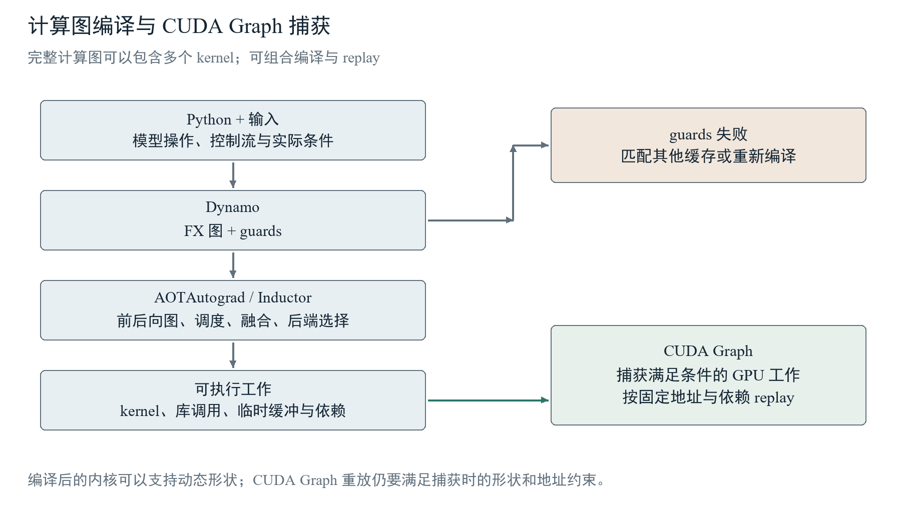

代码块旁的行号链接指向本课采用的提交，仓库及许可见课末。
1 8K 注意力分数矩阵的显存开销
考虑单层、batch=1、32 个 query head、head dimension=128、序列长度 8192 的 prefill。先采用普通 MHA，Q、K、V 的逻辑形状均为 [1,32,8192,128]。一次 QKᵀ 为每个 query 计算对所有 key 的分数，随后按行 softmax，再与 V 相乘。这里只讨论 Attention 核心，投影、RoPE、残差和 MLP 已在第一课单独计账。
若 S 和 P 都以两字节元素保存，每个 [1,32,8192,8192] 张量各占 4 GiB；同样 dtype 的 Q 只占 64 MiB。如果 softmax 中间结果使用 FP32，那个中间张量还会翻倍。训练还需处理保存与反向所需的状态。分数矩阵在数学表达式中存在，是否给它分配完整 HBM 存储，则由实现决定。
本例的容量与计算量；不计投影和 softmax 指令
| 对象 | 形状或计算式 | 结果 |
|---|---|---|
| Q、K、V、O 各一个 | 32×8192×128×2 byte | 各 64 MiB |
| S 或 P 各一个 | 32×8192²×2 byte | 各 4 GiB |
| 每行一个 FP32 统计量 | 32×8192×4 byte | 1 MiB |
| QKᵀ 与 PV 两次 GEMM | 4×32×8192²×128 FLOP | 约 1.10 TFLOP，按稠密方阵计数 |
dense attention 的所有有效 query-key 对仍然参与计算。FlashAttention 通过分块，把一小块分数立即用于指数归约和 V 加权，避免把完整 S、P 写入 HBM。对于既定因果掩码，右上角无效区域可直接跳过。改变了求值次序与存储方式后，浮点舍入路径会变化；数学上的精确 attention 不承诺与另一个实现逐位一致。FP8 等低精度路径还需额外评估量化误差。
处理完一个 key 块，要留下足以合并下一块的归一化状态。进入异步流水线后，还要确定最后一个消费者何时读完缓冲。后面的源码沿这两种依赖追到实际的 attention 调用。
FlashAttention 原论文：IO-aware exact attention
一条输出行最终只需要 dᵥ 个值。即使在数学上对 8192 个 key 都打分，也可边读一个块边累计这一行的分母与加权分子，最后写 dᵥ 个输出。省去的是把全部分数写到 HBM、随后读回的往返；输入 K、V 及每个合法 QK 点积仍须按算法处理。
↑ 返回知识点目录2 在线 softmax 的三个累积量
固定一个 query 行，令 sj 为已经包含 1/√d 的分数，vj 是长度 dv 的 value 向量。直接 softmax 需要所有 sj 的归一化分母。把 key 分成块后，每个块都能先算一个局部分母；难点在于不同块减去的最大值不同，旧状态必须换到同一个指数坐标系。
m 是一个标量，ℓ 是一个标量，u 有 dv 个元素。对于 Br 个 query 行，三者形状分别为 [Br]、[Br]、[Br,dv]。u 尚未归一化，不能把它误当成最终 O。第一次处理有效块以前可设 m=−∞、ℓ=0、u=0；全遮挡行需要额外处理，不能直接依赖 −∞ 的普通代数。
设新块的最大值为 mb，新基准 m′=max(m,mb)。以前每一项 e^(s−m) 乘以 α=e^(m−m′)，就恢复成 e^(s−m′)。分母和加权和必须同时乘 α。只修正分母会改变所有旧 value 的权重；只修正输出也无法得到正确归一化。
稳定 softmax 可以从一个普通加权平均推出来。每个分数 s 的未归一化权重是 exp(s)。从整行统一减去最大值 m，只会令分子和分母同乘 exp(−m)，相除后不变。分块时先保存局部最大值 m、分母 l 和加权分子 u。新块若把最大值从 m 抬到 M，旧的 l 和 u 都要乘 exp(m−M) 才能与新块的权重相加。假设旧块只有分数 0、值 2，新块只有分数 ln 3、值 6，合并时旧块在新基准下的权重为 1/3，结果 (2/3+6)/(1/3+1)=5。仅保留每块归一化后的均值会丢掉两块的权重比。
情境 两个 worker 各处理同一 query 的一段 KV，返回同一种三元组 (m,l,u)，其中 l=Σexp(s−m)，u=Σexp(s−m)v。A 返回 (0,2,6)，B 返回 (ln 2,1,5)。下一批复制了 A 的整组 key/value 一次，使 A 改为 (0,4,12)，B 不变。
问题 为原批和复制后的批分别推导合并输出，统一使用 max(mA,mB) 作基准。对两个局部输出简单平均会在哪批碰巧通过？从中归纳简单平均在局部均值不同的情形下何时成立。
答案
结论 原批正确输出为 4，直接平均恰好等于 4。复制后正确为 11/3，直接平均仍为 4。局部输出不同的时候，两块需有相同的全局指数质量，才能等权合并。
推导 A 从基准 0 切换到 ln 2 时乘 exp(−ln 2)=1/2。原批 A 的 (l,u) 变为 (1,3)，加 B 的 (1,5) 得 8/2。复制后 A 变为 (2,6)，加 B 后得 11/3。
两组局部均值一直是 3 与 5；直接平均看不到 A 的质量翻倍。分片算法应保留可恢复质量的统计量。
2.1 四个 key 的两次在线更新
取分数 [0,ln 2,ln 4,ln 8]，value 依次为 (1,0)、(0,2)、(3,1)、(−1,4)，每块两个 key。把分数选为整数的对数，是为了让每一步都能用简单分数核对。该例只有一行、两个输出维度，真实 kernel 对一个 query tile 的所有行并行执行同样的更新。
在线状态的数值变化
| 处理阶段 | m 与 α | ℓ | u |
|---|---|---|---|
| 第一块 key 0、1 | m=ln 2；首块直接初始化 | 1/2+1=3/2 | (1/2,2) |
| 第二块准备 | m′=ln 8；α=1/4 | 旧 ℓ→3/8 | 旧 u→(1/8,1/2) |
| 第二块新增项 | 相对 ln 8 的权重为 1/2、1 | 新增 3/2 | 新增 (1/2,9/2) |
| 合并完成 | m=ln 8 | 15/8 | (5/8,5) |
| 最终归一化 | 每个输出维度除以 15/8 | 最终概率和为 1 | O=(1/3,8/3) |
直接算整行时，四个权重为 [1,2,4,8]/15，第一维为 (1+12−8)/15=1/3，第二维为 (4+4+32)/15=8/3，与分块结果相同。块间传递的状态总共只有两个标量和两个输出元素。分块大小改变时，真实浮点结果可以有小幅舍入差异，但这套合并关系保持不变。

同一 query 行的两块更新。箭头上的 1/4 同时作用于旧分母和旧加权和。
情境 四个合法位置与同一 query 的分数均为 s，对应 value 为 0、2、4、6。实现每两项为一块。块状态 (m,l,u) 分别是当前最大值、以 m 为基准的指数和、以同样权重累积的标量 value 和。
问题 只处理前两项时写出状态。后两项到达后，先求新 m 和旧状态需乘的因子，再求最终状态以及每项概率、输出。若只平均两个 u，遗漏了哪个归一化量？
答案
结论 第一块是 (s,2,2)，合并为 (s,4,12)，旧状态乘 1。概率各为 1/4，输出 3。
推导 两个块的所有有效指数均为 exp(s−s)=1，第二块贡献 l=2、u=10。旧状态在相同基准下，无须改变数值。将两个分母相加得 4，两个分子相加得 12。
u 是未归一化的和，两个 u 的平均为 6；输出需除以全部有效指数和。本例两个局部均值可等权平均，仅因两块分母恰好相等。
3 Triton 与 CuTe 中的在线递推
代码 1 初始化状态，并将分数变换到 exp2 的单位
# initialize pointer to m and l
m_i = tl.zeros([BLOCK_M], dtype=tl.float32) - float("inf")
l_i = tl.zeros([BLOCK_M], dtype=tl.float32) + 1.0
acc = tl.zeros([BLOCK_M, HEAD_DIM], dtype=tl.float32)
# load scales
qk_scale = sm_scale
qk_scale *= 1.44269504 # 1/log(2)
# load q: it will stay in SRAM throughout
q = desc_q.load([qo_offset_y, 0])mi 对应每行最大值，acc 对应未归一化的 u；它们采用 FP32。示例把 li 初始化为 1，第一块有限最大值使 alpha=exp2(−∞)=0，因此旧 li 被消掉。这一实现技巧依赖有效首块，不可据此推导任意全空输入都安全。
qk_scale=sm_scale×log₂e。由于 2^(x log₂e)=ex，exp2 计算的仍是原 softmax。该示例的 mi 已处于以 2 为底的指数单位；不能再拿自然对数单位的最大值直接相减。Q tile 在内层 key 循环中保留并复用。
代码 2 分数、因果掩码、新最大值与旧状态缩放系数
k = desc_k.load([offsetk_y, 0]).T
qk = tl.dot(q, k)
if STAGE == 2:
mask = offs_m[:, None] >= (start_n + offs_n[None, :])
qk = qk * qk_scale + tl.where(mask, 0, -1.0e6)
m_ij = tl.maximum(m_i, tl.max(qk, 1))
qk -= m_ij[:, None]
else:
m_ij = tl.maximum(m_i, tl.max(qk, 1) * qk_scale)
qk = qk * qk_scale - m_ij[:, None]
p = tl.math.exp2(qk)
# -- compute correction factor
alpha = tl.math.exp2(m_i - m_ij)
l_ij = tl.sum(p, 1)q 的形状为 [Br,d]，k 为 [d,Bc]，qk 为 [Br,Bc]。tl.max(qk,1) 沿 key 维归约。alpha 是每个 query 行一个值；后续以 alpha[:,None] 广播到输出维。
STAGE==2 是因果对角带。该教学代码用 −1e6 作为禁止位置的惩罚；在它覆盖的正常有限分数范围内，exp2 会下溢为零。对任意极端输入、全遮挡行或不同 dtype，这种有限哨兵值不能自动提供通用接口合同。生产实现应按实际掩码路径检查边界。
代码 3 更新输出与分母，随后推进 K、V 的位置
else:
acc = acc * alpha[:, None]
# prepare p and v for the dot
if dtype == tl.float8e5:
v = desc_v.load([off_hz * HEAD_DIM, start_n]).T
else:
v = desc_v.load([offsetv_y, 0])
p = p.to(dtype)
# note that this non transposed v for FP8 is only supported on Blackwell
acc = tl.dot(p, v, acc)
# update m_i and l_i
# place this at the end of the loop to reduce register pressure
l_i = l_i * alpha + l_ij
m_i = m_ij
offsetk_y += BLOCK_N
offsetv_y += BLOCK_Nelse 分支的 acc*=alpha 是普通布局路径；紧邻它的另一分支会拆开 fragment 后分别缩放，数学含义相同。p 转为 dot 接受的输入 dtype 后与 V 相乘，acc 保持累加状态。
l_i=l_i×alpha+lij 与 acc 的更新必须使用同一批 p 和同一个 alpha。m_i=mij 完成状态提交。源代码把统计量更新放在循环后部以减少寄存器压力，说明等价表达式的调度位置也影响 kernel 资源占用。
代码 4 保存归一化输出及反向所需统计量
# epilogue
m_i += tl.math.log2(l_i)
acc = acc / l_i[:, None]
m_ptrs = M + off_hz * N_CTX + offs_m
tl.store(m_ptrs, m_i)
desc_o.store([qo_offset_y, 0], acc.to(dtype))acc/l_i 得到 O；存入 M 的量已经由 mi 变成 mi+log₂(li)，即 log₂∑exp(s)。同一个变量名在 epilogue 前后代表不同对象，阅读反向代码时必须使用更新后的含义。
本课数例中，自然对数 LSE=ln15≈2.708050；该示例保存的 M=log₂15≈3.906891。只看到变量名 M 或 LSE，无法判断其底数。
代码 5 CuTe 版本的旧行状态重缩放与指数结果写回
row_max_cur_scaled = row_max_cur * scale_log2
acc_S_row_exp = cute.math.exp2(
acc_S_row * scale_log2 - row_max_cur_scaled, fastmath=True
)
# row_scale[r] = cute.math.exp2(row_max_prev * self.scale_log2 - row_max_cur_scaled)
row_scale[r] = cute.math.exp2(
(row_max_prev - row_max_cur) * scale_log2, fastmath=True
)
acc_S_row_sum = utils.fadd_reduce(
acc_S_row_exp, init_val=row_sum[r] * row_scale[r], arch=arch
)
row_sum[r] = acc_S_row_sum
acc_S_mn[r, None].store(acc_S_row_exp)
return row_scale这个 Softmax 类的 row_max 保存未乘 scale_log2 的分数最大值，exp2 输入和 row_scale 在使用时再乘 scale_log2；它与前面 Triton mi 的单位约定不同。acc_S_mn 被覆写为指数项，随后供 PV 使用，完整 P 不必写入 HBM。
row_sum 的归约在这里仍分布于协作线程；finalize 再进行 quad reduction。数组名字相同，并不意味着每个线程已经持有整行总和。需要沿布局和最终归约才能确认状态何时完整。
代码 6 零分母处理以及自然对数 LSE 的恢复
# if row_sum is zero or nan, set acc_O_mn_row to 1.0
acc_O_mn_row_is_zero_or_nan = row_sum[r] == 0.0 or row_sum[r] != row_sum[r]
row_scale[r] = (
cute.arch.rcp_approx(row_sum[r] if not acc_O_mn_row_is_zero_or_nan else 1.0)
) * final_scale
row_sum_cur = row_sum[r]
LN2 = math.log(2.0)
row_sum[r] = (
(row_max_scaled + cute.math.log2(row_sum_cur, fastmath=True)) * LN2
if not acc_O_mn_row_is_zero_or_nan
else -Float32.inf
)
return row_scale正常行先取分母倒数，再用 (row_max_scaled+log₂(row_sum))×ln2 恢复自然对数 LSE。零或 NaN 分母走保护分支，避免直接求其倒数；这段处理不能替代输入数值合同。
全遮挡行的数学 softmax 分母为零，概率本身未定义。框架通常需要约定零输出等行为。本文件前面的 check_inf 分支把计算用的 −∞ 最大值替换为安全值，使禁止位置的指数为零；最后统计量返回 −∞。测试这种输入时，应核对整个输出路径及反向，不能只观察某个 helper 没有产生 NaN。
若原分数是自然指数单位 s，要用 exp2(t) 算相同权重，应取 t=s·log2(e)。例如 s=ln 2，t=1，二者的指数都等于 2。最大值、差值与保存的 LSE 必须标清采用哪种单位；把以 2 为底的归一化统计直接送给自然指数的反向，会改变概率，即使前向输出看起来合理。
↑ 返回知识点目录FlashAttention-1 的两层分块循环
先固定一个 batch、一颗头。Q 有 M 行 d 列，K、V 各有 N 行 d 列。暂不加 dropout。第 i 个输出是 d 个数，每个数都要遍历同一行上允许访问的 key。朴素分步实现会将 M×N 个点积写出，再读回来算概率，再把整张概率矩阵交给第二次矩阵乘。若 M=N=4096、d=64，单份 BF16 分数矩阵即为 32 MiB；一份 Q 则是 512 KiB。大中间张量的写入和回读可以避免，所有合法点积仍要计算。
沿论文算法 1 从外向内读。外层一次把 Bc 行 K、V 搬到片上，内层轮流读 Br 行 Q。片上临时的分数块形状是 [Br,Bc]。每个 query 行的上一次结果则横跨外层迭代，要保留基准最大值 m、指数和 l、已归一化输出 o。若第 j 个 KV 块抬高基准，旧结果在新分子中的质量为 exp(m旧−m新)×l旧×o旧。这一项里的 l旧 很容易漏掉：o旧 已经除过旧分母，只给它乘指数因子并不能恢复旧分子。
从一个极小输入重演两轮。第一块的分数是 [0,0]、标量 V=[2,4]，故 m=0、l=2、o=3。第二块仅有一个分数 ln 2、V=9。改用新基准后，旧分母变成 1、旧分子变成 3，新块另贡献分母 1、分子 9，得到 o=6。若把三项直接按 [1,1,2] 的比例归一，也得到 6。因果注意力或尾部不足一块时，需先排除无效 key；当整块都被掩掉时，直接保留已有状态，可避开负无穷相减。
实际内核可能把论文里分开的统计量改存成 LSE，或为多轮写临时输出。所附第一版提交的 SM80 前向路径把首块、中间块、末块分成不同模板实例，同一 KV 块中还会沿 query 块迭代。只数“调用了几次 GEMM”无法区分这条路径和稠密实现，能节约的是全局内存里的完整分数与概率往返。
basis[i], mass[i], out[i] ← −∞, 0, 0
for each KV tile j:
stage K[j], V[j] on chip
for each visible query tile i:
s ← masked scaled dot(Q[i], K[j])
for each row with at least one valid score:
b ← max(basis, max_valid(s)); w ← exp(s_valid − b)
old ← exp(basis − b) × mass
out ← (old × out + w @ V_valid) / (old + sum(w))
basis, mass ← b, old + sum(w)
persist the updated row states第一版前向按 KV 块区分首轮与末轮
constexpr int M = Kernel_traits::Cta_tile_p::M;
const int STEPS = (params.seqlen_q + M - 1) / M;
constexpr int blocksize_c = Kernel_traits::Cta_tile_p::N;
if (params.seqlen_k == blocksize_c) {
fmha::device_1xN_<Kernel_traits, Is_dropout, Is_causal, Return_softmax, true, true>(params, bidb, bidh, STEPS, ph, 0);
} else {
const int max_loop_steps = (params.seqlen_k + blocksize_c - 1) / blocksize_c;
fmha::device_1xN_<Kernel_traits, Is_dropout, Is_causal, Return_softmax, true, false>(params, bidb, bidh, STEPS, ph, 0);
for (int loop_step_idx = 1; loop_step_idx < max_loop_steps - 1; loop_step_idx++) {
fmha::device_1xN_<Kernel_traits, Is_dropout, Is_causal, Return_softmax, false, false>(params, bidb, bidh, STEPS, ph, loop_step_idx);
}
fmha::device_1xN_<Kernel_traits, Is_dropout, Is_causal, Return_softmax, false, true>(params, bidb, bidh, STEPS, ph, max_loop_steps - 1);
}STEPS 由 query 长度除以行块高并向上取整，max_loop_steps 由 key 长度与列块宽决定。检查 device_1xN_ 调用尾部的布尔模板参数，可追出哪个调用能从空状态开始、哪个调用需要收尾。
最终输出与跨轮临时缓冲
// Output the values.
if (is_final_write) {
gmem_o.template store<elem_type>(out, 0);
gmem_o.move(step_stride);
} else {
gmem_o_tmp.store(out, 0);
}
// Move to the next part of the output.
if (!(Is_first && Is_last)) { gmem_o_tmp.move(step_stride); }is_final_write 成立才按输出元素类型写 gmem_o；仍有后续 KV 块时写 gmem_o_tmp。论文的跨块状态在该版本中有真实的存储所有者。
论文 FlashAttention，算法 1 与 IO 复杂度
情境 一个注意力头只有一条 query，三条 key 均可见，V 为标量。前两个 key 的分数均为 0、V 分别为 1 和 7，已处理完这一块并写回归一化输出。第三个 key 的分数为 ln 4、V 为 10。所有运算按实数计算。
问题 先列出首块的 m、l、o。再写出切到新基准后的旧分母、旧分子、新分母和最终输出。若直接将两个块各自的归一化输出平均，会得到多少？用三个 key 在同一行的权重检查哪种结果正确。
答案
结论 第一轮状态为 (0,2,4)，第二轮在新基准下旧分母为 1/2、旧分子为 2。新分母为 3/2，最终输出为 8。直接平均得到 7。
推导 首块指数权重是 1、1，旧输出 (1+7)/2=4。基准抬到 ln 4 后旧质量乘 1/4，于是旧贡献为 (1/2)×4=2。新项贡献 10，故结果 (2+10)/(1/2+1)=8。直接检查三个权重分别为 1/6、1/6、4/6，输出也是 8；两块平权会误把第三个 key 的质量从 2/3 改为 1/2。
4 注意力分块与片上容量
取 Br=Bc=d=dv=128，Q、K、V 各块采用 BF16。三块原始数据各 32 KiB，单份合计 96 KiB；FP32 输出累加器有 64 KiB 的逻辑容量，FP32 分数 tile 也有 64 KiB。这些对象可能分布在寄存器、shared 或 TMEM，生命周期还可能重叠。把所有尺寸相加只能作为对象账本，不能直接当作每 CTA 的 shared 使用量。实际分配要由对应架构的布局和编译资源报告确认。
增大 Br 能让一块 K/V 服务更多 query 行，减少重复装载；同时会放大 Q、分数和输出状态。增大 Bc 能减少循环次数，却增加每轮分数暂存和归约工作。再加入多级缓冲，输入空间近似随 stage 数增长。较大的 tile 也可能让每个 SM 能同时驻留的 CTA 更少，因此吞吐不会随 tile 单调提升。
[128,128] FP32 累加器按逻辑尺寸是 64 KiB。这不等于 CTA 一定从 shared 申请 64 KiB：结果可以分布在各 lane 的寄存器、架构专用存储，或因实现而暂存。判断占用率要把每一块映射到实际存储类型并加上流水槽数，再分别套相应资源上限。
↑ 返回知识点目录4.1 因果掩码下的块跳过
在相同起点、相同长度的自注意力中，可见条件为 j≤i。按 128×128 分块得到 64×64 个逻辑块：严格左下角有 2016 个全有效块，对角线上有 64 个部分有效块，右上角 2016 个块可跳过。有效元素精确为 8192×8193/2=33,558,528。访问 2080 个块所覆盖的 34,078,720 个 tile 位置中，仍有对角块内的无效位置要遮挡。
代码 7 把完全可见前缀与需要逐元素掩码的对角带分开
# range of values handled by this stage
if STAGE == 1:
lo, hi = 0, start_m * BLOCK_M
elif STAGE == 2:
lo, hi = start_m * BLOCK_M, (start_m + 1) * BLOCK_M
lo = tl.multiple_of(lo, BLOCK_M)
# causal = False
else:
lo, hi = 0, N_CTXSTAGE 1 从 key 0 遍历到当前 query tile 的起点以前；STAGE 2 只处理与 query tile 重合的范围。前者省去逐元素因果比较，后者执行掩码，未来块根本不进入循环。
当 Lq≠Lk、存在 KV cache 或 query 采用局部编号时，需要把 q_idx 转成绝对位置。比如旧历史长度 100、一次追加两条 query，其绝对位置是 100 和 101；拿局部 0、1 与 key 绝对编号比较会错误屏蔽历史。因果对齐方式必须来自接口定义。
情境 序列实际长度 10，合法行列号 0…9。因果 self-attention 要求 key 位置 j≤query 位置 i。内核用 4×4 分块，最后一块在两个轴都尝试覆盖 8…11，缓冲区没有为下标 10、11 分配真实元素。
问题 对 i=8 和 i=9 先列出全行合法的 j；再只看右下角这一个 tile，准确列出能进入 softmax 的 (i,j)。哪种条件负责未来位置，哪种条件负责越界读取与写入？
答案
结论 第 8 行可见 0…8，第 9 行可见 0…9。末块只有 (8,8)、(9,8)、(9,9) 三项参与归一化。
推导 先用 i<10 和 j<10 排除物理无效的行列，读取 Q、K、V 和最终 store 都须有相应长度保护。剩下的四个合法地址配对中 (8,9) 是未来关系，须使其对行指数和贡献为零。
只屏蔽写回可防部分越界写，不能阻止越界读或错误 softmax 分母；只做因果判断也不能让第 10、11 行变成合法输出。
4.2 FlashAttention-2 的并行划分
如果只有 B×H 个 CTA，batch 很小、head 不多时，长序列仍可能无法充分占用设备。将 query 方向也切成独立 tile，每个 CTA 维护自己的 m、ℓ、u，并遍历所需 K/V，可以把本例扩展为 32×64=2048 个 query tile 工作项。不同 CTA 读取重叠 K/V，缓存能否缓解重复读取还与调度次序有关。
CTA 内也存在划分选择。若多个 warp 各算同一批 query 的不同 key 部分，必须再合并它们的分母和输出；若各 warp 负责不同 query 行，共享读入的 K/V 后可各自完成行归约和输出。FlashAttention-2 的 sliced-Q 分工减少了这类 warp 间中间结果通信，配合延后归一化，降低非矩阵指令开销。该原则不规定后来所有架构采用同一寄存器布局。
FlashAttention-2：query 分块、warp 分工与非矩阵操作
↑ 返回知识点目录FlashAttention-2 的输出行归属
保留上一节的在线更新，先交换前向循环顺序。给一个 CTA 分配某个 batch、head、query 行块，它自主遍历所有可见的 KV 块。Q 固定，行状态和输出分子可以一直保留在该 CTA，最后才归一化并写回。论文算法 1 使用尚未除以分母的 U；新基准出现时直接做 U←αU+W·V。第一版教学式中用的是已归一化的 o，两者的关系是 U=l×o。把第一版的旧 o 当作第二版的旧 U 会漏掉一整个块的权重。
并行有两层。先按 query 行块拆 CTA，让小 batch、少头仍有足够多的独立工作块。再在 CTA 内按 query 行把不同输出行分给不同 warp，共用该轮的 K、V。早期 sliced-K 分工让同一输出行的贡献分落不同 warp，随后还要交换或合并；sliced-Q 让一个 warp 负责自己的行，减少了这类跨 warp 通信。归一化仍沿该行所有可见 key，而非沿 query 轴。
令 M=768、N=1024、Br=128、Bc=128、batch=1、head=2。在稠密非因果、不 split-KV 的简化网格中，可列出 2×6=12 个独立输出工作块，每块做 8 轮 KV 更新，总共 96 个分数块。这仅是逻辑排程：生成较多 CTA 不能保证同时驻留，也不等于 HBM 真的为每个 CTA 独立搬了整份 K；L2 复用、寄存器和共享内存会改变实测结果。
在附带的第二代 C++ 内核路径里，先给分数加掩码，随后更新行统计并重缩放 acc_o，再将本块权重转成矩阵乘输入格式，执行 P×V。循环后才求最后的 LSE 并归一化 acc_o。内核可逆序走访 KV 块；合法集合与掩码一致时，遍历顺序不改实数结果，浮点归约顺序可能留下舍入差。
parallel for (batch, head, query_tile):
q ← load owned query rows
b, z, U ← −∞, 0, zeros(rows, value_width)
for each KV tile visible to these rows:
skip rows with no valid key in this tile
s ← masked scaled dot(q, K_tile)
b_next ← row_max(b, s); a ← exp(b − b_next)
w ← exp_valid(s − b_next)
U, z ← a × U + w @ V_tile, a × z + row_sum(w)
b ← b_next
write O = U / z and LSE = b + log(z) for nonempty rows先掩码，再更新 softmax 状态
mask.template apply_mask</*Causal_mask=*/false>(
acc_s, n_block * kBlockN, m_block * kBlockM + (tidx / 32) * 16 + (tidx % 32) / 4, kNWarps * 16
);
softmax.template softmax_rescale_o</*Is_first=*/false, /*Check_inf=*/Is_local>(acc_s, acc_o, params.scale_softmax_log2);
Tensor rP = FLASH_NAMESPACE::convert_type<Element>(acc_s);acc_s 是本轮分数片段，acc_o 已包含前面各轮的输出分子。softmax_rescale_o 同时获得二者，返回后再按 Element 转换权重，供第二个矩阵乘读取。
块内累加和循环外归一化
// Reshape rP from (MMA=4, MMA_M, MMA_N) to ((4, 2), MMA_M, MMA_N / 2)
// if using m16n8k16 or (4, MMA_M, MMA_N) if using m16n8k8.
Tensor tOrP = make_tensor(rP.data(), FLASH_NAMESPACE::convert_layout_acc_Aregs<typename Kernel_traits::TiledMma>(rP.layout()));
FLASH_NAMESPACE::gemm_rs(acc_o, tOrP, tOrVt, tOsVt, tiled_mma, smem_tiled_copy_V, smem_thr_copy_V);
}
// Epilogue
Tensor lse = softmax.template normalize_softmax_lse<Is_dropout>(acc_o, params.scale_softmax, params.rp_dropout);
// Convert acc_o from fp32 to fp16/bf16
Tensor rO = FLASH_NAMESPACE::convert_type<Element>(acc_o);gemm_rs 把本轮贡献加到 acc_o。循环结束后 normalize_softmax_lse 才将输出除以分母，随后转换为输出精度。
论文 FlashAttention-2，算法 1 与 §3.2–3.3 的两级并行
情境 单层采用非因果稠密注意力，batch=1、head=2、M=768、N=1024、Br=Bc=128。比较两种教学排程：A 每个头只有一个 CTA，负责它的全部行；B 每个 CTA 只负责一块 query 行。二者都不拆一行的 KV 归约。
问题 分别计算 CTA 数、每个 CTA 负责的分数块数及总分数块数。说明 B 中哪些数据能由同一 CTA 跨轮保存、哪些会被不同 CTA 请求。若实测时长几乎相同，用哪些计数或时间线可以检验两个不同原因？
答案
结论 A 有 2 个 CTA，各处理 48 个块；B 有 12 个 CTA，各处理 8 个块。两者均计算 96 个块。B 增加独立输出任务，没有减少点积数量。
推导 每头有 6 个 query 块、8 个 KV 块，乘积为 48。B 的一个 CTA 保留自己的 Q、基准、分母和输出分子；同头的多个 CTA 会请求相同的 K、V。若设备远多于 12 个 SM，先看 grid 和各 SM 的工作分布判断是否仍铺不满。若 CTA 分布已改善，比较 L2/DRAM 流量及每块寄存器、驻留数，查重复读取或资源压力是否抵消收益。用相同精度、掩码、形状的正常运行时间验收。
5 反向传播的概率重算与激活存储
训练需要从上游 dO 得到 dQ、dK、dV。前向若不保存完整 P，反向可以重新计算一个 QKᵀ tile，再用前向每行的 LSE 还原概率。Q、K、V、O 与每行统计量仍需要可用；线性大小的状态不能被理解成整个模型不需要保存激活。
softmax 的 Jacobian 为 diag(p)−ppᵀ。对行 i，先定义 δi=∑_j Pij dPij，则 dSij=P_ij(dPij−δi)。把 dPij=dOi·Vj 代入并交换求和，可得 δi=dOi·∑_jP_ijV_j=dOi·Oi。这样只需对 dv 维求点积，无须先构造整行 dP。
代码 8 用保存的 O 与上游 dO 计算每行 delta
off_m = tl.program_id(0) * BLOCK_M + tl.arange(0, BLOCK_M)
off_hz = tl.program_id(1)
off_n = tl.arange(0, HEAD_DIM)
# load
o = tl.load(O + off_hz * HEAD_DIM * N_CTX + off_m[:, None] * HEAD_DIM + off_n[None, :])
do = tl.load(DO + off_hz * HEAD_DIM * N_CTX + off_m[:, None] * HEAD_DIM + off_n[None, :]).to(tl.float32)
delta = tl.sum(o * do, axis=1)
# write-back
tl.store(Delta + off_hz * N_CTX + off_m, delta)off_m 选择 query 行，off_n 选择 value 维度；o*do 沿 axis=1 归约，得到 [BLOCK_M] 的 Delta。这里的 Z、H、N_CTX 与 stride 前提由外层调用限定，教学 kernel 并未宣称支持全部非连续输入。
代码 9 反向现场恢复概率并形成 dS
for blk_idx in range(num_steps):
kT = tl.load(kT_ptrs)
vT = tl.load(vT_ptrs)
qk = tl.dot(q, kT)
p = tl.math.exp2(qk - m)
# Autoregressive masking.
if MASK:
offs_n = curr_n + tl.arange(0, BLOCK_N2)
mask = (offs_m[:, None] >= offs_n[None, :])
p = tl.where(mask, p, 0.0)
# Compute dP and dS.
dp = tl.dot(do, vT).to(tl.float32)
ds = p * (dp - Di[:, None])
ds = ds.to(tl.float16)
# Compute dQ.
# NOTE: We need to de-scale dq in the end, because kT was pre-scaled.
dq += tl.dot(ds, tl.trans(kT))qk−m 中的 m 是前向保存的 base-2 LSE。这个示例在外层先把 K 乘以 sm_scale×log₂e，因此此处 dot 后可直接 exp2。没有检查外层缩放，就容易误判内核漏了 1/√d。
dp−Di[:,None] 对每一行减去同一个 delta，再逐元素乘 p。最后的 dQ 累加还涉及预缩放 K 的单位恢复；源码注释明确要求末尾 de-scale。概念公式中的 dS 与中间缓存的缩放形式应分别记录。
沿用前面四个 key，取上游 dO=(2,−1)，得到 dP=[2,−2,5,−6]，δ=2×(1/3)−8/3=−2。因此 dS=[4/15,0,28/15,−32/15]，和为 0。该零和来自 softmax 对整行共同平移不敏感，可以作为定位梯度错误的一个检查，但仍需逐元素参考对照。
反向的所有权不同于前向：一个 query tile 的 dQ 可以独立累加，dK/dV 会接收多个 query tile 的贡献。选择哪个维度作为 CTA 主轴、是否使用原子加、是否多次遍历，会改变临时空间和可复现性。确定性路径需要固定合并次序或额外缓冲，可能付出时间或容量代价。
若训练带 attention dropout，还要重现同一次前向的随机掩码：P 经 mask/(1−p_drop) 后参与 V 加权，反向也必须使用对应掩码。只保存 seed 而改变随机计数器到元素的映射，仍会得到不同掩码。上述 Triton 示例没有 dropout，本节的无 dropout 推导不能直接充当 dropout 实现。FP8 路径还需分开评估输入量化和概率转低精度造成的误差。
对固定 query 行，设 P=(1/4,3/4)，上游对两个概率的梯度 dP=(2,6)。softmax 反向先算行内加权均值 5，再得到 dS=(1/4×(2−5),3/4×(6−5))=(−0.75,0.75)。行内和为零，对应“整行分数同加常数不改变概率”。将这个归约误作跨 query 的列和，会破坏这项可独立检查的性质。
↑ 返回知识点目录注意力反向的概率重算与梯度归约
前向可以丢弃整张 P；反向仍需恢复每个合法元素的概率。对一行保存 L=log∑exp(s)，若 Q、K、缩放、位置偏置和掩码与前向完全一致，重算得 p=exp(s−L)。只保存输出 o 和 L 并不能凭空还原所有 p，仍要访问 Q、K。训练时若启用 dropout，还要按前向的随机状态重建同一掩码。本段先固定没有 dropout、没有偏置、至少有一个可见 key。
上游梯度 g 与该行输出等宽。由于 o=∑pjvj，有 dPj=g·vj。softmax 的导数需要行均值 D=∑pjdPj；代入可得 D=g·o，一个标量就能在遍历 key 前算好。于是 dSj=pj(dPj−D)，且 ∑dSj=0。对重新计算出的每个 tile，这条式子把矩阵乘的结果和整行的信息接了起来。
将 dS 传回第一项矩阵乘时，还要乘打分时用过的比例 t=1/√d。对 Q 的梯度累加 t×dS·K，对 K 的梯度累加 t×dST·Q，V 的梯度累加 PT·g。一个 KV 块接受多个 query 块的贡献，一个 query 块也接受多个 KV 块的贡献；同一份梯度只能由一个所有者直接写，其他拆分需要显式归约。反向怎样分工因此可能与前向不同。
例子取单行 p=(1/4,3/4)，v=(2,6)，上游 g=2。前向 o=5，所以 D=10；直接算 dP=(4,12)，其加权平均也等于 10。两项 dS 分别为 −1.5、1.5。给该行所有分数加同一个小扰动，输出应保持不变，恰与两项梯度的和为零一致。该检查一并检验重算基准、归约轴和掩码。
D ← row_dot(dO, O) using the saved output
for each visible tile pair (i, j):
S ← scaled_dot(Q[i], K[j]) with the forward mask
P ← exp(S − saved_LSE[i])
G ← dO[i] @ transpose(V[j])
dS ← P × (G − broadcast_rows(D[i]))
accumulate dV[j] from transpose(P) @ dO[i]
accumulate dK[j], dQ[i] using dS and the forward scale
reduce partial gradients belonging to the same logical coordinates反向内核从概率和逐行校正项形成 dS
// Reshape acc_dp from (MMA=4, MMA_N, MMA_N) to (row=(2, MMA_N), col=(2, MMA_N))
Tensor dS = make_tensor(acc_dp.data(), scores.layout());
auto pointwise_mult = [](float p, float dp, float d) {
return p * (!Is_dropout || p >= 0 ? dp - d : d);
};
#pragma unroll
for (int mi = 0; mi < size<0>(dS); ++mi) {
#pragma unroll
for (int ni = 0; ni < size<1>(dS); ++ni) {
float scaled_ds = pointwise_mult(scores(mi, ni), dS(mi, ni), dP_sum(mi));
if constexpr (Is_softcap) { scaled_ds *= dtanh(mi, ni); }
dS(mi, ni) = scaled_ds;
}
}scores 已是恢复的概率，acc_dp 中存有上游梯度与 V 的点积，dP_sum 每行共享。在没有 dropout 和 softcap 的分支，逐元素运算还原为 p×(dP−D)；其他模板分支另带各自的导数或掩码。
论文 FlashAttention，反向的重计算与 IO 分析 · FlashAttention-2，§3.1.2 的反向算法
情境 一个 query 对两条 key 的分数为 0、ln 3，两个标量 value 分别是 −2、2。已保存自然对数 LSE=ln 4 和前向输出，收到上游梯度 g=4。无缩放、无 dropout，所有 key 均有效。
问题 从 LSE 重算两项概率，写出前向 o、反向 dV、dP、D、dS。若错误实现对两个分数都输出正梯度，在不查看内部变量时，怎样用一个受控扰动说明它有错？
答案
结论 p=(1/4,3/4)，o=1，dV=(1,3)，dP=(−8,8)，D=4，dS=(−3,3)。若两项 dS 均为正，它会错误预测统一平移分数能改变目标。
推导 p 为 exp(s−ln 4)，o=−2/4+6/4=1。每个 value 的梯度是自己的概率乘 4。D 可由 4×1 得到，也可用 (−8)/4+3×8/4=4 核对。再代 p×(dP−4) 得 (−3,3)。同时给两项分数加 ε，softmax 的分子分母都乘 exp(ε)，前向输出不变；这个方向的导数必须为零。
6 Hopper 的数据到达与计算完成事件
Attention 每轮有 QK、softmax、PV 三段依赖。下一块 K/V 的装载可以与当前计算重叠；异步矩阵乘提交后，负责控制的线程也可以继续安排其他工作。要让这种重叠成立，必须分别管理“输入已可读”和“输入已不再被读”。TMA 装载完成只能证明第一个条件，无法证明 WGMMA 已消费完这个 shared 槽位。
代码 10 producer 取得槽位后发起 K 的搬运
auto load_K = [&] (int const n_block, auto const& smem_pipe_write, auto need_seqlenk_masking_type) {
pipeline_k.producer_acquire(smem_pipe_write);
if constexpr (!PagedKVNonTMA) {
auto [n_block_idx, bidb_kv_idx] = paged_kv_manager.get_indices_for_K_TMA();
copy(params.tma_load_K.with(*pipeline_k.producer_get_barrier(smem_pipe_write), mcast_mask_kv, TMA::CacheHintSm90::EVICT_LAST),
tKgK_TMA(_, n_block_idx, bidb_kv_idx), tKsK_TMA(_, smem_pipe_write.index()));
} else {
constexpr bool Seqlenk_mask = decltype(need_seqlenk_masking_type)::value;
paged_kv_manager.template load_K<Seqlenk_mask>(n_block, sK_pi(_, _, smem_pipe_write.index()));
pipeline_k.producer_commit(smem_pipe_write, cutlass::arch::cpasync_barrier_arrive);
}
};producer_acquire 等待该轮 shared 槽位空闲。TMA copy 将目标槽位关联到 pipeline 的 barrier；分页 KV 的另一分支使用对应的 load_K 并提交完成协议。smem_pipe_write 同时携带槽位和代次信息，防止下一轮误用上一轮的就绪状态。
PagedKVNonTMA 是编译期分支，说明同一个 Attention 算法可以有不同输入搬运机制。页表寻址、连续 tile 和 TMA 条件有关；不能因 kernel 名字含 TMA 就假定所有 KV 都走同一条搬运路径。
代码 11 consumer 等待装载，等待 MMA，最后释放 K 槽位
if constexpr (IntraWGOverlap) {
Tensor tSrS = partition_fragment_C(tiled_mma_qk, select<0, 1>(TileShape_MNK{}));
consumer_wait(pipeline_k, smem_pipe_read);
flash::gemm</*zero_init=*/true, /*wg_wait=*/-1>(tiled_mma_qk, tSrQ, tSrK(_, _, _, smem_pipe_read.index()), tSrS);
warpgroup_wait<0>();
pipeline_k.consumer_release(smem_pipe_read);
if constexpr (HasQv) {
shared_storage.pipelines.barrier_Qv.wait(work_idx % 2);
consumer_wait(pipeline_v, smem_pipe_read);
flash::gemm</*zero_init=*/false, /*wg_wait=*/0>(tiled_mma_qv, tSrQv, tSrV(_, _, _, smem_pipe_read.index()), tSrS);consumer_wait 保证 K tile 就绪；flash::gemm 提交 QK；warpgroup_wait<0>() 在这段序言中等到相关 WGMMA 完成，然后 consumer_release 允许 producer 覆盖 K。把 release 提前到 gemm 返回后就可能覆盖尚在读取的输入。
这里摘录流水线序言。后续主循环会使用更细的等待与多块重叠，不能把这一段的 wait<0> 当成整个 kernel 始终串行。代码中 HasQv 是可选附加项，普通 QK/PV 推导不包含它。
FlashAttention-3 围绕 Hopper 的 TMA 与异步 WGMMA 组织 producer/consumer 分工，并把一块的 softmax 与另一块的矩阵计算重叠。其 FP8 路径还采用分块量化等方法控制误差。硬件支持异步只提供可能性：如果 shared 槽位不足、寄存器压力太高或等待放在关键路径上，性能仍会受限。
FlashAttention-3：Hopper 异步执行及低精度路径

两类同步约束。图示说明生命周期，不代表某次设备测量或固定周期数。
↑ 返回知识点目录FlashAttention-3 的 Hopper 异步流水
沿用第二代的输出行所有权，改变一次更新在 H100 上的排程。TMA 负责按照张量描述符把一块 K 或 V 从全局存储搬到共享内存。消费者 warpgroup 用 WGMMA 在 Tensor Core 发起异步矩阵乘。发出指令、运算完成、操作数槽可以被覆盖是不同事件。生产者只写空闲槽；消费者等本代数据到达后才能使用它，直到最后一次相关矩阵读结束才能释放该槽。
论文算法 1 先分搬运者与消费者，再用不同消费者的工作遮住延迟。算法 2 在同一消费者内部进一步错开两个相邻 KV 块。对块 j，分数 Sj 先于其概率、概率先于它的 PV，这条依赖无法打破；但上一块已有概率，做上一块的 PV 时，本块的 QK 可以已经发出。等本块分数可读后，普通算术单元可以算它的 softmax，而上一块 PV 仍占 Tensor Core。保存新旧分数与概率需要额外寄存器；流水级数太多时，寄存器溢出或驻留不足会反过来拖慢内核。
读源码时给每个片段标上所属 KV 块。附带路径从较高列块号向前走，注释中的 n_block+1 就是流水的上一块。两个 gemm 调用的 wg_wait=-1 指定发出后不在该调用处等所有工作完成。随后 warpgroup_wait<1> 与后面的 warpgroup_wait<0> 允许在两个不同的完成边界释放 K、V。要判断 softmax 真与哪段 GEMM 重叠，还须检查目标编译结果和计时；单凭 C++ 相邻行不能给出实际周期数。
FP8 是第三代论文考察的另一条路径。原始点积难量化时，作者使用分块尺度，并研究将 Q、K 同乘正交变换 H 来分散离群值。用行向量表示，有 (QH)(KH)T=QHHTKT=QKT。等式在量化前成立；截断和舍入以后，误差只可测量，不能由此等式消去。开了 Hopper 异步调度并不自动启用低精度或该预处理，应分别记录实际 dtype、缩放与 kernel 路径。
沿真实 FP8 路径再核一次尺度的粒度。在所附提交的普通无 softcap 分支，内核用 batch 和 KV 头索引读 Q、K 的 descale，二者乘入 softmax_scale_log2。这里看到的是这条入口的索引约定；论文研究的细粒度块量化与正交处理要分别追到预处理才能确认启用。举例说，将 q=(2,0)、k=(3,1) 都右乘二维正交 Hadamard，得到 (√2,√2) 与 (2√2,√2)，实数点积前后均为 6。若故意用步长为 1 的粗网格再舍入，点积变成 (1,1)·(3,1)=4。该例旨在界定恒等式适用的时点，也说明分散离群值不会保证每个输入的误差都减小。
producer: wait for the target slot to become free
producer: launch TMA copies and signal readiness for this generation
consumer: wait for the first K; form scores and weights for tile 0
for each later KV tile j in traversal order:
issue QK for j once its K is ready
issue PV for the previous tile once its V is ready
wait for current QK; compute current weights and row scale
finish previous PV before rescaling its accumulated result
release each storage slot after its final device reader
drain the last PV; normalize and write the owned rowsHopper 消费者错开两轮矩阵乘
// Each step does gemm0 for iter n_block, gemm1 for iter n_block + 1, and softmax for iter n_block.
auto fwd_step = [&](int const n_block, auto mask_fn, auto check_inf_type) {
static constexpr bool Check_inf = decltype(check_inf_type)::value;
PipelineState smem_pipe_read_v(smem_pipe_read.index(), smem_pipe_read.phase(), smem_pipe_read.count());
++smem_pipe_read;
Tensor tSrS = partition_fragment_C(tiled_mma_qk, select<0, 1>(TileShape_MNK{}));
if (!UseSchedulerBarrier || warp_group_idx == 0) { consumer_wait(pipeline_k, smem_pipe_read); }
warp_scheduler_barrier_sync();
flash::gemm</*zero_init=*/true, /*wg_wait=*/-1>(tiled_mma_qk, tSrQ, tSrK(_, _, _, smem_pipe_read.index()), tSrS);
if constexpr (RescaleOBeforeGemm) { softmax.rescale_o(tOrO, scores_scale); }
if constexpr(!HasQv) {
if (!UseSchedulerBarrier || warp_group_idx == 0) { consumer_wait(pipeline_v, smem_pipe_read_v); }
}
flash::gemm</*zero_init=*/false, /*wg_wait=*/-1>(tiled_mma_pv, cute::conditional_return<MmaPV_is_RS>(tOrP, tOsP), tOrV(_, _, _, smem_pipe_read_v.index()), tOrO);
warp_scheduler_barrier_arrive();
warpgroup_wait<1>();
pipeline_k.consumer_release(smem_pipe_read); // release Ksmem_pipe_read_v 保存前一缓冲代次，新 K 用递增后的 smem_pipe_read。两次 gemm 各取自己的索引。wait<1> 允许最多一组尚未完成的已提交运算，配合发射顺序可先归还 K 槽。
新分数进入 softmax，旧 V 释放
scoremod_premask_fn(tSrS);
mask_fn(tSrS, n_block);
cute::copy(softmax.template max_get_scale</*Is_first=*/false, Check_inf>(tSrS), scores_scale);
if constexpr (LargeHeadDimV) { store_scales(scores_scale, smem_pipe_read_v.index()); }
softmax.template online_softmax</*Is_first=*/false, Check_inf>(tSrS);
if constexpr (!HasQv) {
warpgroup_wait<0>();
pipeline_v.consumer_release(smem_pipe_read_v); // release V
}
if constexpr (Is_FP8 && !V_colmajor) { flash::permute_Cregs_fp8(tSrS); }
convert_type_out(make_tensor(tSrS.data(), tOrP.layout()), tOrP);
if constexpr (Is_FP8 && V_colmajor) { flash::permute_Aregs_fp8(tOrP); }
if constexpr (!MmaPV_is_RS) { write_P_to_smem(tOrP); }
if constexpr (!RescaleOBeforeGemm) { softmax.rescale_o(tOrO, scores_scale); }
if constexpr (!MmaPV_is_RS) { arrive_on_P_write_barrier(); }掩码先作用于 tSrS，然后更新基准并计算在线概率。在这里展示的 !HasQv 路径中，只有 wait<0> 之后才释放 V；是否在 PV 之前或之后重缩放旧输出由模板选择。
Hopper FP8 路径把两侧的尺度并入 softmax
float softmax_scale_log2 = params.mainloop.softmax_scale_log2;
if constexpr (Is_FP8 && !Has_softcap) {
int const bidh = get<1>(block_coord);
int const bidh_kv = !PackGQA ? params.mainloop.qhead_per_khead_divmod.divide(bidh) : bidh;
float const q_descale = params.mainloop.ptr_q_descale == nullptr ? 1.0f : params.mainloop.ptr_q_descale[bidb * get<0>(params.mainloop.stride_q_descale) + bidh_kv * get<1>(params.mainloop.stride_q_descale)];
float const k_descale = params.mainloop.ptr_k_descale == nullptr ? 1.0f : params.mainloop.ptr_k_descale[bidb * get<0>(params.mainloop.stride_k_descale) + bidh_kv * get<1>(params.mainloop.stride_k_descale)];
softmax_scale_log2 *= q_descale * k_descale;
}
flash::Softmax<!LargeHeadDimV ? 2 * (2 * kBlockM / NumMmaThreads) : 2, /*Max_offset=*/!Is_FP8 ? 0 : 8> softmax(softmax_scale_log2);该无 softcap 的 FP8 分支按 batch、KV head 和显式 stride 读取 descale 指针。矩阵乘码值与实数分数之间的倍率必须在求指数之前生效，空指针则按一处理。
论文 FlashAttention-3，算法 1、算法 2 和 §3.3
情境 为检查 Hopper 前向的一次依赖，使用教学时序。时刻 0，上一块的概率和 V 已就绪，本块 K 也已到达。唯一的 Tensor 管线先执行本块 QK，耗时 4 个单位；随后执行上一块 PV，耗时 5 个单位。单独一条标量管线计算本块 softmax，耗时 3 个单位。最终重缩放必须等该 softmax 和上一块 PV 都完成，忽略其自身用时。
问题 若在每次 GEMM 后让整条消费者路径串行，何时能重缩放？允许两条管线按依赖独立工作时，请给出三个操作的区间与最早重缩放时刻。若把本块 K 槽在时刻 2 提前交还写者，会违反什么依赖？
答案
结论 完全串行需 12 个单位；按依赖可在时刻 9 重缩放。时刻 2 归还本块 K 时，读取它的 QK 尚未完成。
推导 先做 QK，[0,4)；随后 PV 在 Tensor 管线上占 [4,9)。新分数在 4 就绪，所以 softmax 可在独立管线上占 [4,7)。取 max(7,9)=9；串行排法为 4+5+3=12。若生产者在 2 就覆写 K，未完成的读取可能读到下一代。真实 GPU 的重叠还受发射、寄存器与可用槽数限制，此处只由题设时序算最早边界。
7 Blackwell 上的 softmax 与输出缩放
矩阵乘吞吐增长后，指数、归约和输出向量缩放可能占据更大的执行比例。FlashAttention-4 针对 Blackwell 采用 TMEM 和异步 MMA 组织中间结果与流水线，并在特定路径采用 2-CTA MMA、软件指数及有条件重缩放。它们解决的是不同资源约束：更快矩阵乘不能自动消除 SFU、shared 或输出校正的压力。
代码 12 源码为 softmax、校正、MMA、装载和写回分配 warp
self.softmax0_warp_ids = (0, 1, 2, 3)
self.softmax1_warp_ids = (4, 5, 6, 7)
self.correction_warp_ids = (8, 9, 10, 11)
self.mma_warp_id = 12
self.epilogue_warp_ids = (13,)
self.load_warp_ids = (14,)
self.empty_warp_ids = (15,)
self.tmem_alloc_cols = cute.arch.get_max_tmem_alloc_cols("sm_100")这组基础角色包含两个 softmax warp 组、四个 correction warp，以及 MMA、epilogue、load 和空闲角色。后续条件分支可能调整角色，因此不能把它当作所有 shape 的固定配置。
MMA warp 主要负责发起异步矩阵操作，softmax warp 读取相应结果并执行归约与指数，correction warp 处理在线状态缩放。分工允许不同硬件通路同时工作，也使每个角色的寄存器需求不同。TMEM 为中间矩阵提供专门存储，读出、转换和释放仍受依赖约束。
↑ 返回知识点目录FlashAttention-4 的 TMEM 与任务分工
Blackwell 的 SM100 路径需要重新问一次“谁在等谁”。Tensor Core 的吞吐增加，逐元素指数、行归约、共享内存读写未必同比增加。论文 §3.1 先分别估算矩阵乘、数据搬运、exp 的供给时间，选择值得重排的阶段。例取分数块 128×128、头维 128，QK 约 2×1283 FLOP，PV 的主乘加也约 2×1283 FLOP；一个满块还要为 16384 个分数做指数并归约。后者的时间受指数与一般算术管线约束，不能统一除以张量峰值解释。
这里的 Tensor Memory（TMEM）是供特定 Tensor Core 操作与 SM 线程交换累积片段的片上存储。共享内存中的 K、V 与 TMEM 中的 S、P、O 是不同对象。CuTe DSL 内核把 warp 分为加载、发矩阵指令、softmax、校正、写回等角色，默认角色编号还会随配置调整。MMA warp 通知 S 已就绪；softmax warp 将 S 变成本轮权重，校正 warp 按新基准处理旧 O。能够继续下一次 PV 的条件要同时覆盖 P 就绪和所依赖旧 O 就绪。
§3.1.3 将部分以 2 为底的指数改用 FMA 算近似。把 x 拆成整数 a 和小数 f，2ˣ=2ᵃ×2ᶠ，前者可用指数位缩放，后者在小区间做多项式逼近。少量片段走这条路径，其他片段继续用硬件指数，可分担指数单元的工作。多项式阶数、使用比例、舍入后的误差和寄存器占用需要一起检查。源码的条件分支同时保留两条路径，不能由版本号推出某形状一定采用固定比例。
反向还会遇到多个 KV 贡献汇入同一 dQ 的问题。论文 §3.2 的 2-CTA 路径利用配对 CTA 的协作来减少部分共享内存流量和跨块累加开销，确定性路径还要约束不同贡献的累加次序。检查所用 GPU、CTA cluster 配置、头维及选择的后端，再对照相应分支；在同属 Blackwell 的其他芯片上应核对其支持的具体指令与 kernel，不能仅根据架构家族名称移植时序。
以论文图 3 的 dQ 为例，每个原始 CTA 各持一块不同的 KV，两块的 dS·K 都会更新同一批 query 行。组成 CTA 对后，先用集群内分布式共享内存互换 dS 的半块，让一个 CTA 拥有自己那半批行、同时拥有覆盖两个 KV 块的完整归约轴。于是每半批行在片上合并更长的归约，再写自己的 dQ 部分和，减少全局原子更新。付出的成本是半块交换与配对同步；若没有不同 KV 块汇入同一 dQ 的争用，不能把减少原子次数直接换算成同倍加速。
load warp: bring K, V into the chosen shared-memory stage
MMA warp: compute the score tile and publish S-ready
softmax warps: wait for S, reduce rows, produce weight fragments
correction warps: update old output where the row basis changed
softmax and correction: publish readiness for the next PV
MMA warp: consume P and V, retaining output in the designated store
epilogue: wait for the last contribution, normalize and write outputSM100 默认 warp 角色和 TMEM 容量
self.softmax0_warp_ids = (0, 1, 2, 3)
self.softmax1_warp_ids = (4, 5, 6, 7)
self.correction_warp_ids = (8, 9, 10, 11)
self.mma_warp_id = 12
self.epilogue_warp_ids = (13,)
self.load_warp_ids = (14,)
self.empty_warp_ids = (15,)
self.tmem_alloc_cols = cute.arch.get_max_tmem_alloc_cols("sm_100")softmax 的两组 warp、校正组、MMA、写回和加载组各有编号。后续分支会因调度和写回配置调整编号。tmem_alloc_cols 与数据在 HBM 的布局大小不是同一指标。
MMA、softmax 和输出校正之间的屏障
# This pipeline is not the typical producer-consumer pipeline. The "producer" mma warp
# uses it to signal that S is ready, and the softmax threads wait for S to be ready.
# When softmax threads write P to tmem and the correction threads have rescaled O, they
# signal as "consumer". The mma warp then waits for that signal to do the P @ V gemm.
pipeline_s_p_o = pipeline_custom.PipelineUmmaAsync.create(
barrier_storage=storage.mbar_S_full_P_full_O_rescaled.data_ptr(),
num_stages=self.s_p_o_stage,
producer_group=mma_warp,
consumer_group=softmax_correction_threads_cluster,
cta_layout_vmnk=cta_layout_vmnk,
defer_sync=True,
)这是双方交替传递就绪状态的流水。mma_warp 产生 S，就绪的一组消费者包括 softmax 与 correction。两项前置工作的有效代次都要与后续 PV 对齐。
硬件指数与两路软件近似的选择
k % ex2_emu_freq < ex2_emu_freq - ex2_emu_res
or j >= frg_cnt - 1
or j < ex2_emu_start_frg
):
acc_S_row_frg[k, j] = cute.math.exp2(acc_S_row_frg[k, j], fastmath=True)
acc_S_row_frg[k + 1, j] = cute.math.exp2(
acc_S_row_frg[k + 1, j], fastmath=True
)
else:
# acc_S_row_frg[k, j], acc_S_row_frg[k + 1, j] = utils.e2e_asm2(acc_S_row_frg[k, j], acc_S_row_frg[k + 1, j])
acc_S_row_frg[k, j], acc_S_row_frg[k + 1, j] = utils.ex2_emulation_2(
acc_S_row_frg[k, j], acc_S_row_frg[k + 1, j]
)这一分支按片段位置及配置分流；一侧调用 exp2，另一侧把两个浮点片段送进 ex2_emulation_2。看静态源码可定位选择点，实际比例还取决于编译期常量。
2-CTA 反向中 dS 的交换对端
cta_rank_in_cluster = cute.arch.make_warp_uniform(cute.arch.block_idx_in_cluster())
dS_cluster_empty_phase = Int32(1)
# 2-CTA: CTA 0 exchanges stage 1 (bottom half), CTA 1 exchanges stage 0 (top half)
exchange_stage = cta_rank_in_cluster ^ 1 if const_expr(self.use_2cta_instrs) else Int32(0)
if const_expr(self.use_2cta_instrs):
peer_cta_rank_in_cluster = cta_rank_in_cluster ^ 1
sdS_xchg_src = self._dS_exchange_source(sdS_xchg, sdS_dK, peer_cta_rank_in_cluster)cta_rank_in_cluster 区分集群中的两方，用与 1 异或得到对端编号。exchange_stage 选择本 CTA 对应的半块阶段，_dS_exchange_source 确定给对端 dQ 归约使用的来源。
论文 FlashAttention-4，§3.1 前向流水与 §3.2 反向协作
情境 一个满块需 8,388,608 FLOP 的矩阵乘、16,384 次指数、491,520 B 共享内存访问。教学模型给三种独立资源的持续能力分别为每周期 16,384 FLOP、16 次指数、768 B；资源可完美重叠，其余工作忽略。一次改动将 1/4 指数移交闲置的 FMA，假设其耗时能完全隐藏，且其他需求不变。
问题 分别算原来的三个资源耗时下界与共同下界，再算改动后的共同下界及理想速度比。若实测比原来更慢，举出一个题设未建模、可在相同工作量下检验的原因。
答案
结论 原来三个下界为 512、1024、640 周期，最慢项是指数。分流后共同下界为 768 周期。在题设能达到这些下界的理想时序里，速度比为 4/3。
推导 各自用工作量除以本资源的持续能力。剩余 12288 次硬件指数需 768 周期，仍超过 640 与 512。真实 FMA 若与地址计算或 softmax 其他运算争资源，会违背“完全隐藏”；可比较指令组成、寄存器与 spill，同时在同一形状复测无 profiler 时间。即使结果更快，也要核查指数近似造成的数值误差。
7.1 在线 softmax 的延迟重缩放
稳定 softmax 常把当前真最大值作为基准，使所有指数≤1；数学上也可以选一个稍小的公共基准，只要指数没有溢出且分子分母使用同一基准。若最大值每增加一点都缩放整个 dv 维输出，向量乘法开销会很大。保留旧基准一段时间，可以减少这类重缩放。
代码 13 用 log2 单位的阈值决定是否沿用旧基准
row_max_old = self.row_max[0]
row_max_safe = row_max_new if row_max_new != -cutlass.Float32.inf else 0.0
acc_scale_ = (row_max_old - row_max_safe) * self.scale_log2
acc_scale = cute.math.exp2(acc_scale_)
if cutlass.const_expr(self.rescale_threshold > 0.0):
if acc_scale_ >= -self.rescale_threshold:
row_max_new = row_max_old
row_max_safe = row_max_old
acc_scale = 1.0
self.row_max[0] = row_max_new
return row_max_safe, acc_scaleacc_scale_=(row_max_old−row_max_safe)×scale_log2。若增量在阈值内，源码把 row_max_new、row_max_safe 都恢复为旧值，并把 acc_scale 设为 1。新指数、分母与输出此后仍按这个旧基准一致计算。
例如旧基准为 10，新候选最大值为 10.5，假定 scale_log2=1、阈值=1，增量只有 0.5，允许指数最大达到 2^0.5≈1.4142，避免一次旧输出缩放。若新候选为 12，增量 2 超过阈值，更新基准并乘 2^(10−12)=1/4。
构造函数允许 rescale_threshold=0，启用与阈值选择取决于调用配置。不能把论文中的示例阈值当成所有 dtype 和所有内核的默认值。P 的保存 dtype、max_offset 及允许范围会限制最大指数，条件重缩放必须与这些参数一起检查。
软件指数同样需要数值合同：把部分指数计算转成普通算术单元上的近似多项式，可缓解专用指数通路压力，但误差、额外指令与输出 dtype 要共同评估。2-CTA 模式则要求两个 CTA 协作并满足对应布局和同步规则，不能理解为随便把 grid 放大两倍。硬件代际、head dimension、mask 和 backward 需求决定具体可用路径。
若保留稍小的旧基准，某个 exp2 输入可为正，局部指数可能大于 1。只要未溢出且各块仍按同一基准累计，最终分子分母相除仍正确。允许的阈值必须和指数实现、累加 dtype 及最长累计范围一起检验；避免一次向量缩放并不自动保证任意输入都数值安全。
情境 某行的旧指数基准为 7.0，新 tile 给出候选 7.8。为使用 exp2，比较式是 d=(旧基准−候选)×2。实现明确规定 d<−1 时换基准，其他情况保留旧基准。旧分母 l=3、旧分子 u=9；先只处理旧贡献的换算。
问题 给出 d、是否切换、乘在旧 l 和 u 上的共同系数及换算后的数值。若候选改成 7.5，严格小于条件如何影响选择？为何单独改分母就会改变原块均值？
答案
结论 候选 7.8 时 d=−1.6，切换并乘约 0.3299，旧贡献约为 l=0.990、u=2.969。改为 7.5 时 d=−1，保持旧基准。
推导 指数基准抬高使旧权重缩小，因子是以 2 为底的 −1.6 次幂。旧分子和分母同乘该数，u/l 仍为 3；只缩小 l 时，旧块的均值会虚增。
7.5 恰落在阈值上，没有触发严格不等式。后续新旧贡献须始终以选定的同一基准相加。
FlashAttention-4 的延迟重缩放
前面每次更新都取真实行最大值当基准，这样所有相对权重都不超过 1。现在把同一数学式重写一遍：对任意有限基准 b，只要分子、分母都按 b 表示，o=∑2x−bv/∑2x−b 就与 b 的选择无关。这里 x 是换成以 2 为底后的分数。基准的作用是控制数值范围，并给分块累积提供共同单位。因此可在有足够表示范围时暂时保留旧基准，直到新分数比它大得太多才整体缩放。
假设阈值取 2 个二进制指数单位。当前 b=0、分母 1、分子 2，来了一个 x=1、v=4。保持 b=0 时新增权重 2，得到分母 3、分子 10；若立即改用 b=1，会得到分母 1.5、分子 5。两者相除都为 10/3。再到一个 x=3，新基准必须与仍在使用的 0 比较，差值 3 已越过阈值，旧分母和旧分子均乘 1/8。若代码在第一次跳过缩放时已经把记录的 b 更新为 1，第二次就会从错误的单位换算。
实现还要处理首个非空块、整行没有可见项以及下游权重格式。保留旧基准可能使未归一化权重大于 1；阈值必须适合中间表示。SM100 softmax 代码比较的是 (旧基准−候选基准)×scale_log2 与负阈值，在阈值启用且恰好相等时沿用旧基准；候选抬高过多才切换。不能把自然对数下的分数差直接与以 2 为底的配置相减。
current ← retained basis in base-2 score units
candidate ← max(current, largest valid score in this tile)
if tile is the first nonempty tile: initialize basis and row state
else if candidate − current > threshold:
factor ← 2^(current − candidate)
rescale both the old row mass and old numerator by factor
current ← candidate
weight ← 2^(score − current) on valid lanes
accumulate weight and weight @ V; divide once at the end候选基准、阈值和保留的基准
else:
row_max_old = self.row_max[0]
row_max_safe = row_max_new if row_max_new != -cutlass.Float32.inf else 0.0
acc_scale_ = (row_max_old - row_max_safe) * self.scale_log2
acc_scale = cute.math.exp2(acc_scale_)
if cutlass.const_expr(self.rescale_threshold > 0.0):
if acc_scale_ >= -self.rescale_threshold:
row_max_new = row_max_old
row_max_safe = row_max_old
acc_scale = 1.0
self.row_max[0] = row_max_new
return row_max_safe, acc_scaleacc_scale_ 在 exp2 之前处于对数单位。门槛满足时同时恢复 row_max_new、row_max_safe 并把 acc_scale 设为 1，最后写回真正使用的基准。写错其中一项，就会把不同单位的块累加到一起。
四代 FlashAttention 的行状态与硬件分工
| 版次 | 输出行与跨块状态 | 主要优化 | 适用条件 |
|---|---|---|---|
| FA1 | 每个 KV 块遍历 Q，保留各行最大值、分母及归一化输出 | 省去整张分数矩阵和概率矩阵的显存往返 | 所引内核为 SM80，稠密点积数仍随 M×N 增长 |
| FA2 | CTA 持有 Q 行块，warp 分行，输出分子跨块累加 | 增加独立 CTA，减少 warp 间的部分和交换 | 普通前向一次写回，拆分 KV 时另需合并部分结果 |
| FA3 | 消费者持有 Q 行，本代 K、V 读完后归还各自的槽 | 让 TMA 搬运、WGMMA 和 softmax 重叠 | Hopper 路径，FP8 和正交预处理须另查配置 |
| FA4 | 经 TMEM 传递分数与权重，校正组重缩旧输出 | 分担指数计算，按阈值跳过部分重缩放 | 所引内核为 SM100，反向双 CTA 需集群协作 |
论文 FlashAttention-4，§3.1.4 的条件重缩放
情境 初始已有一条记录，二进制分数为 0、V=1，所以基准 0、分母 1、分子 1。随后每个块仅含一个元素，(分数,V) 依次为 (1,2)、(2,4)、(3,8)。规则为只有候选基准超出当前保留基准严格大于 2 才切换。忽略舍入。
问题 逐块列出实际采用的基准、分母、分子。给出最终输出，并用所有元素一次归一验算。说明第二块刚好达到阈值时应保留哪个变量，才能让第三块判定正确。
答案
结论 三个新块后依次得到 (0,3,5)、(0,7,21)、(3,15/8,85/8)，最终输出 85/15。第二块后保留的基准仍须是 0。
推导 前两块的新增权重为 2、4，给分子增加 4、16。第三块相对 0 的差为 3，先将旧状态除以 8，再加新块的 1、8。全行权重按 1:2:4:8 分配，分子是 1+4+16+64=85。若把刚好达到阈值的候选 2 记成了基准，第三块只见到差 1，实际分母却仍以 0 为单位。
8 Decode 的分块 KV 归并
prefill 有很多 query tile，可以沿 query 方向分散工作；单请求单 token decode 的 Lq=1，即使历史很长，每个 head 的 query 方向仍只有一个工作项。把历史 KV 切成多个 split，可让更多 CTA 并行扫描，再合并局部结果。代价是局部输出的写回、第二阶段归约和额外提交；短历史或大 batch 下可能不划算。
局部输出 Oa、Ob 已各自归一化，不能简单求平均，因为两个 split 的概率质量不同。设 La、Lb 是各 split 的自然对数 LSE，先求 L=log(exp(La)+exp(Lb))，再按 exp(La−L)、exp(Lb−L) 加权。计算 L 时仍要减最大值，避免 exp(La) 溢出。
四 key 算例的第一个 split 有原始指数质量 3，Oa=(1/3,4/3)；第二个质量 12，Ob=(1/3,3)。权重应为 1/5、4/5，输出仍为 (1/3,8/3)。简单平均会把第二维算成 13/6，显示局部结果即使各自正确，也不能丢掉 LSE 后合并。
代码 14 由局部自然对数 LSE 计算稳定合并权重
# Compute exp scales and sum
lse_max_cur = (
0.0 if lse_max == -Float32.inf else lse_max
) # In case all local LSEs are -inf
LOG2_E = math.log2(math.e)
lse_sum_cur = 0.0
for s in cutlass.range(cute.size(ts2rrLSE, mode=[1]), unroll_full=True):
scale = cute.math.exp2(
ts2rrLSE[0, s, m] * LOG2_E - (lse_max_cur * LOG2_E), fastmath=True
)
lse_sum_cur += scale
ts2rrLSE[0, s, m] = scale # Store scale for later use
lse_sum_cur = cute.arch.warp_reduction_sum(
lse_sum_cur, threads_in_group=threads_per_col
)代码先减 lse_max_cur，再乘 LOG2_E 交给 exp2。ts2rrLSE 随后被覆写为未归一化 split 权重；warp_reduction_sum 汇总分母。变量含 LSE 的名字在这段之后已经不再存对数值。
代码 15 归一化 split 权重并供后续输出合并使用
lse_sum[m] = cute.math.log(lse_sum_cur, fastmath=True) + lse_max
# Normalize scales
inv_sum = (
0.0
if (lse_sum_cur == 0.0 or lse_sum_cur != lse_sum_cur)
else 1.0 / lse_sum_cur
)
ts2rrLSE[None, None, m].store(ts2rrLSE[None, None, m].load() * inv_sum)
# Store the scales exp(lse - lse_logsum) back to smem
cute.copy(s2r_tiled_copy_LSE, ts2rrLSE, ts2rsLSE)lse_sum 保存全局自然对数 LSE，inv_sum 归一化所有 split 权重。零分母的处理覆盖没有有效贡献的 split 情况；后续按这些权重乘局部输出。额外缓冲和 combine kernel 是 split-KV 成本的一部分，比较时必须一起计入。
当某 split 对当前 query 恰好全空，令它对全局分母和分子的贡献为 0。若所有 split 都为空，先按接口定义决定输出；此时不存在可作为统一基准的有限最大值。把两个负无穷 LSE 直接作差再指数，会产生未定义值，随后乘零也无法保证恢复。
情境 同一 query 的候选被分为互不重叠的 A、B 两块。每块只返回归一化后的标量输出和局部 log-sum-exp，A 为 (1,ln 2)，B 为 (5,ln 6)，对数以 e 为底。原始分数和 value 不再保留。
问题 分别恢复两个局部分母及其未归一化分子，再给出全局 LSE 与输出；若平均两个返回的输出，写出差值的符号。若 A 整块被掩掉，说明怎样在数学上处理它。
答案
结论 两块分母为 2、6，分子为 2、30。全局 LSE=ln 8，输出=4；平均得 3，平均减正确为 −1。A 完全无效时应只保留 B。
推导 LSE 取指数等于原块指数和。局部输出乘其分母还原分子，再以总分母 8 归一。两块的权重实际为 1/4 与 3/4。
被完全掩掉的块没有正质量，直接跳过它或按零质量累加，不应计算未定义的局部 0/0 再相乘。
8.1 GQA 的共享 KV 与独立概率行
若 Hq=32、Hkv=8，每四个连续 query head 共享一组 K/V head，常见映射为 hkv=⌊hq/4⌋。KV 存储随 Hkv 减少，输出与概率归约仍按 32 个 query head 计算。kernel 可把同组 query 排在一起复用 KV，但逻辑共享不保证实际 HBM 只读一次；tile 打包、调度与缓存决定真实流量。
代码 16 入口检查 GQA 的 query head 数能被 KV head 数整除
if enable_gqa:
Hq = query.size(1)
Hkv = key.size(1)
if Hq % Hkv != 0:
raise ValueError(
f"Expect number of query heads to be a multiple of kv heads for GQA "
f"but got Hq={Hq} and Hkv={Hkv}."
)enable_gqa 使接口按 GQA 解释 head 关系；它不改变 value 的内容，也不把多个 query 的 softmax 合成一行。前面入口还检查四维张量及布局。本例允许 32/8=4；30/8 无法通过这里的整除条件。
若两个 query 头共用 key [1,0] 与 [0,1]，但 q0=[1,0]、q1=[0,1]，不考虑缩放时两行分数分别是 [1,0] 和 [0,1]。同一组 KV 字节既可复用，两个概率行却正好偏向相反位置。合并加载可以省流量，合并 softmax 状态会改变结果。
↑ 返回知识点目录SageAttention 的 INT8 打分与 K 平滑
沿用 FlashAttention 的分块在线 softmax，再问矩阵乘本身用何种数制。SageAttention 第一版论文给出多种组合；算法 1 的 SAGEAttn-B 先按块量化 Q、K 为 INT8，整数点积恢复成带尺度的分数后做浮点 softmax，本块权重与 V 走 FP16 乘法。每行仍在掩码允许访问的全部 key 上归一化。量化误差主要进入两处：QK 舍入改变行内相对分数，第二个矩阵乘的输入与部分累积精度影响加权和值。两类误差应分开观察。
为何优先平滑 K？在一颗头的 key 序列上，逐通道求均值 u，并从每条 key 都减去同一向量。固定 query q 时，q·(kj−u)=q·kj−q·u；第二项在该行所有 key 上相同，softmax 权重不变。比如一维 K=[100,102]、q=1，平滑后分数从 [100,102] 变成 [−1,1]，重要的分数差仍为 2，但量化不必再覆盖共同偏置 101。若各 KV 块各自减了不同均值，又没有逐块把偏移加回，那么同一行不同列丢掉的量就不同，概率会变。
对非零块，设 Q、K 的实值分别近似为整数码乘 a、b。整数点积结束后乘 a×b，才回到可比较的分数单位。1/√d 及从 exp 到 exp2 的换底因子，可按实现折入尺度或另乘，但各只应算一次。不同 KV 块可采用不同 b；直接比较两个块的原始整数点积分数会选错行最大值。固定精度的量化引入误差，中心化在量化前的实数等价不代表量化后输出逐位一致。
历史 Sage1 源码中，固定形状路径按实际序列轴求均值，整数点积随后转为浮点并乘本轮尺度，exp2 产生供在线累积的临时权重，另转换成 FP16 供 PV。若调用方除了 O 还要原始自然对数 LSE，中心化前后相差本 query 的 q·u/√d；这个常数对概率可消去，对 LSE 却需按约定恢复。
u ← mean over token positions of K, independently for each channel
Kc ← K − u
encode Q tiles and Kc tiles with their own INT8 scales
for each query tile and its visible KV tiles:
scores ← integer_dot(code_Q, code_K) × q_scale × k_scale
apply the remaining score scale and the logical mask
update softmax row basis, denominator and old numerator
add the block contribution using FP16 weights and V
return normalized rows; restore score offsets if raw LSE is requestedSageAttention-1 按序列轴平滑 K
seq_dim = 1 if tensor_layout == "NHD" else 2
if smooth_k:
km = k.mean(dim=seq_dim, keepdim=True)
k -= km
else:
km = None
if dtype == torch.bfloat16 or dtype == torch.float32:
v = v.to(torch.float16)seq_dim 随布局改变。对每个通道，所有 token 减去同一均值；V 在这段路径有独立的精度转换。若误沿 head_dim 求每行不同的标量，上述位移等价关系不再普遍成立。
整数点积恢复分数与掩码
if not skip:
k_mask = offs_n[None, :] < (kv_len - start_n)
k = tl.load(K_ptrs, mask=k_mask)
k_scale = tl.load(K_scale_ptr)
qk = tl.dot(q, k).to(tl.float32) * (q_scale * k_scale)
if mask_block is not None:
if mask_block.dtype == tl.int1:
qk = qk + tl.where(mask_block, 0, -1.0e6)
else:
qk = qk + mask_block
else:
qk += tl.where(k_mask, 0, -1.0e6)Q、K 整数点积结果先转浮点再乘当前块的尺度，随后使用掩码。有了共同的分数单位，下一段在线 softmax 才能跨块比较最大值。
指数和与 FP16 的 PV 路径
m_ij = tl.maximum(m_i, tl.max(qk, 1))
qk = qk - m_ij[:, None]
p = tl.math.exp2(qk)
l_ij = tl.sum(p, 1)
alpha = tl.math.exp2(m_i - m_ij)
l_i = l_i * alpha + l_ij
acc = acc * alpha[:, None]
v = tl.load(V_ptrs, mask = offs_n[:, None] < (kv_len - start_n))
p = p.to(tl.float16)
acc += tl.dot(p, v, out_dtype=tl.float16)l_i 按新基准更新，acc 同样乘 alpha。参与分母的 p 先保留在浮点路径，随后单独转成 FP16 进入 PV，源码还指定了该点积的输出类型。
论文 SageAttention，算法 1、K 平滑与四条精度路径
情境 单头标量 q=1，三条可见 key 为 [4,6,8]，V 为 [0,1,3]，头维为 1，使用自然指数。暂时完全忽略量化舍入。方案 A 三条 key 都减全局均值 6；方案 B 将前两条分一块减均值 5，最后一条独自一块减 8，均不做修正。
问题 分别列出 A、B 的三项分数；比较原始与两方案中第三项相对第二项的概率比。若必须使用 B 的数据布局，怎样恢复原有概率？若还要原始 LSE，A 的接口还应做什么？
答案
结论 A 得 [−2,0,2]，概率比保持 exp(2)；B 得 [−1,1,0]，比值变为 exp(−1)。B 须在跨块归一前修正每块不同的偏移，A 的原始 LSE 等于新 LSE 加 6。
推导 同一 softmax 行中 p3/p2=exp(s3−s2)，完全不需要先求出分母。A 的每一项统一平移，B 的后两项分别减 5 和 8。把 q×本块均值加回该块所有分数（或减去同一全局常数后的等价修正）才让分块的质量可比。A 的所有指数都比原来小 exp(6) 倍，取自然对数后偏移为 6。
SageAttention2 的分组量化与分数修正
第一版从 K 减去共同向量，利用了行 softmax 对统一平移的不变性。第二代论文算法 1 进一步平滑 query 块。令 K′ 为已中心化的 K，令 u 为一块 Q 的逐通道均值，Q′=Q−u。原来需要的 QK′T 可以展开成 Q′K′T 加上 uK′T。后者是长度等于本块 key 数的向量，一个 query 块内的每一行都复用它，却会随 key 列改变。因此须在计算 softmax 之前补回这项。没有这个步骤，连量化前的实数公式也会变。
论文中的 4+8 方案用 INT4 范围表示 Q、K 的部分点积输入，用 FP8 表示送入第二次乘法的未归一化权重和 V。量化尺度按实际 Tensor Core 操作数持有方式分组。一个尺度管太多离群值时，其他值失去分辨率；若给每个 token 都外挂独立尺度，乘积恢复时的读取、广播、乘法与线程片段排列又会带来开销。论文采用每线程粒度来折中。这里的“每线程”指匹配运算片段的分组规则，不能简单解释为为每个 token 的每个元素各存一个 scale。
源码中的 INT4 query 量化函数先按余数类选出隔 8 行的一组行，取该组绝对最大值，除以 7 得尺度，再按符号取整。检查存储目的类型会看到 tl.int8，说明这一处写出的是具有四位数值范围的码值，这个辅助函数本身不能证明物理存储已将两个四位码打包，也不能证明最终执行了 INT4 MMA。论文表 3 另列 8b 分支，QK 用 INT8、PV 用 FP8。它保留 K 平滑，省去 Q 平滑，因此也无须加回 Q 块均值产生的分数修正。所引公开 CUDA 入口展示了 INT8 QK 与 FP8 PV 的分派。核对具体配置时应分别记录论文方案、命中的函数、分组和真实指令。
手算一个 query 块。K′=[−1,2]，块均值 u=3，某一行 q=4，所以 q′=1。低比特点积要逼近的残差分数是 [−1,2]，共享校正为 [−3,6]，相加得 [−4,8]，正好等于 qK′。若只补一个标量，永远不能把这一行的分数差从 3 拉回 12。这正是平滑 Q 比平滑 K 多出一次按列修正的原因。
Kc ← K minus a shared channelwise mean
for each Q tile:
u ← row-group mean of Q; residual ← Q − u
encode residual and Kc in groups matching the operand layout
for each KV tile:
local ← restore each integer dot product with its matching scales
correction ← u @ transpose(Kc_tile)
scores ← scale(local + broadcast_to_query_rows(correction))
update online row state and accumulate the low-precision PV
normalize the output and apply any deferred V scalesINT4 query 的分组索引、数值范围和存储类型
off_blk = tl.program_id(0) // 8
off_tld = tl.program_id(0) % 8
off_h = tl.program_id(1)
off_b = tl.program_id(2)
offs_n = off_blk * BLK + tl.arange(0, BLK // 8) * 8 + off_tld
offs_k = tl.arange(0, C)
input_ptrs = Input + off_b * stride_iz + off_h * stride_ih + offs_n[:, None] * stride_in + offs_k[None, :]
output_ptrs = Output + off_b * stride_oz + off_h * stride_oh + offs_n[:, None] * stride_on + offs_k[None, :]
scale_ptrs = Scale + off_b * stride_sz + off_h * stride_sh + off_blk * 8 + off_tld
x = tl.load(input_ptrs, mask=offs_n[:, None] < L)
x = x.to(tl.float32)
scale = tl.max(tl.abs(x)) / 7. + 0.0000001
x_int8 = x / scale
x_int8 += 0.5 * tl.where(x_int8 >= 0, 1, -1)
x_int8 = x_int8.to(tl.int8)
tl.store(output_ptrs, x_int8, mask=offs_n[:, None] < L)
tl.store(scale_ptrs, scale)off_tld 选择块内行号的余数类，offs_n 每隔 8 行取一行。每组共享最大值尺度；x_int8 最后以 int8 类型写出，码值范围与目的数组布局需分别核实。
公开 CUDA 入口中的另一种实际选择
if qk_quant_gran == "per_warp":
q_int8, q_scale, k_int8, k_scale = per_warp_int8_cuda(q, k, km, tensor_layout=tensor_layout, BLKQ=128, WARPQ=32, BLKK=64)
elif qk_quant_gran == "per_thread":
q_int8, q_scale, k_int8, k_scale = per_thread_int8_triton(q, k, km, tensor_layout=tensor_layout, BLKQ=128, WARPQ=32, BLKK=64, WARPK=64)
o = torch.empty(q.size(), dtype=dtype, device=q.device)
if pv_accum_dtype == 'fp32+fp32' and smooth_v:
warnings.warn("pv_accum_dtype is 'fp32+fp32', smooth_v will be ignored.")
smooth_v = False该分支将 qk_quant_gran 映射到 per_warp_int8_cuda 或 per_thread_int8_triton。函数名与返回类型说明这个分派走 INT8；不能从同一仓库里存在 INT4 辅助函数直接推断这里使用 INT4。
论文 SageAttention2，算法 1、图 4 与 §3.3
情境 一个 query 块有两条标量 query，原值 2、6，块均值为 4。两条已经完成 K 平滑的 key 为 −1、1。为单独排查 Q 平滑，先取消舍入、比例因子及其他掩码，每行均可见两条 key。
问题 写出原始两行分数、用残差 query 得到的两行分数以及应该广播回每行的校正向量。只漏掉校正时，第一行更偏好哪个 key？它在原始计算中偏好哪个？设计一个能避免与量化舍入混淆的对照。
答案
结论 原始分数两行为 [−2,2]、[−6,6]；残差分数两行为 [2,−2]、[−2,2]。校正量按 key 列取值，写成形状 [1,2] 的行向量 [−4,4]，沿 query 轴广播到两行。补回后恢复原分数；若漏掉，第一行会从偏好第二个 key 变成偏好第一个。
推导 两条残差 query 分别为 −2、2，和同一个 K 相乘得到残差分数。4×[−1,1]=[−4,4] 针对不同 key 各有一项，但同块的两条 query 都用这同一行。先用浮点跑残差加/不加校正，比较每列与直接点积的差；浮点等价成立后才启用分组量化，新增偏差才可归入舍入或尺度。
SageAttention2++ 的局部累加范围
沿用上一节的低精度输入，再分清两个不同的累加位置。一次 FP8 矩阵指令内部把一串 P、V 乘积加在一起；多个这样的结果还要加到更长寿的输出分子。SageAttention2++ 在相应硬件上选用 FP16 的指令内累加，再定期把部分结果转成 FP32 并加入跨块缓冲。指令更快的代价是 FP16 的最大有限值约为 65504，哪怕最终除以分母后的 o 很小，中间的同号乘积也可能先溢出。
以论文 §3 的 mma.m16n8k32 为例，一个输出元素每次最多累加 32 项。若允许 |P码|≤p、|V码|≤v，同号最坏情形的一次部分和可达 32pv；两次才转到 FP32 时，上界变为 64pv。缩小输入码值的目标范围，并用恰当的反向尺度恢复单位，可为这种延后换精度预留空间。这个估算控制溢出风险，不能保证每次小数加法的舍入误差都可忽略。
论文示例为两条连续 MMA 选择 p=224、v=4.5，64×224×4.5=64512，低于 65504。在所附公开提交的 CUDA 包装器里，fp32+fp16 分支则把传给 V 量化函数的 scale_max 设为 2.25，并在分派时选 f16 部分累加的 inst_buf 内核。二者属于不同证据层面。要计算实际实现的最坏部分和，还应检查该分支 P 的放大常数和缓冲周期，不能只把包装器中的 2.25 当作论文整组参数。
choose the P and V code ranges for the intended MMA path
bound the same-sign partial sum over a buffering period
quantize block weights and V using their chosen scales
issue the FP8 product with the selected partial accumulator
before its range is exhausted, promote the partial output to FP32
reset the local accumulator and continue with later products
restore the scales and normalize once all contributing tiles are complete切换到 FP16 局部累加时的 V 量化范围
if pv_accum_dtype == 'fp32+fp16' and smooth_v:
warnings.warn("pv_accum_dtype is 'fp32+fp16', smooth_v will be ignored.")
smooth_v = False
quant_v_scale_max = 448.0
if pv_accum_dtype == 'fp32+fp16':
quant_v_scale_max = 2.25
v_fp8, v_scale, vm = per_channel_fp8(v, tensor_layout=tensor_layout, scale_max=quant_v_scale_max, smooth_v=smooth_v)同一包装器中，V 的量化范围随 pv_accum_dtype 变化。per_channel_fp8 返回量化后的 V 及按通道尺度；这里还明确限制了 smooth_v 的组合。
PV 内核按累加路径分派
if pv_accum_dtype == "fp32":
if smooth_v:
lse = sm89_compile.qk_int8_sv_f8_accum_f32_fuse_v_scale_fuse_v_mean_attn(q_int8, k_int8, v_fp8, o, q_scale, k_scale, v_scale, vm, _tensor_layout, _is_caual, _qk_quant_gran, sm_scale, _return_lse)
else:
lse = sm89_compile.qk_int8_sv_f8_accum_f32_fuse_v_scale_attn(q_int8, k_int8, v_fp8, o, q_scale, k_scale, v_scale, _tensor_layout, _is_caual, _qk_quant_gran, sm_scale, _return_lse)
elif pv_accum_dtype == "fp32+fp32":
lse = sm89_compile.qk_int8_sv_f8_accum_f32_fuse_v_scale_attn_inst_buf(q_int8, k_int8, v_fp8, o, q_scale, k_scale, v_scale, _tensor_layout, _is_caual, _qk_quant_gran, sm_scale, _return_lse)
elif pv_accum_dtype == "fp32+fp16":
lse = sm89_compile.qk_int8_sv_f8_accum_f16_fuse_v_scale_attn_inst_buf(q_int8, k_int8, v_fp8, o, q_scale, k_scale, v_scale, _tensor_layout, _is_caual, _qk_quant_gran, sm_scale, _return_lse)比较三个分支的实际符号，fp32+fp16 路径选择带 accum_f16 和 inst_buf 的入口。做性能对照时应固定 QK 的分组与输入，单独切换这项。
论文 SageAttention2++，§3.1–3.2 的范围约束与延迟 FP32 缓冲
情境 某教学配置沿归约维每条 MMA 累加 32 项，局部累加器为 FP16，每两条提升到 FP32。取码值上限 |P|≤224、|V|≤4.5，暂以所有乘积同号且达到上限检验范围。工程师拟改为三条才提升。
问题 分别给出二条与三条的最坏幅值。若必须三条才提升，维持 P 上限不动，V 码幅值须满足哪条数学上界？举出一个可表示且保守的 V 幅值，并说明缩范围后还需验证什么。
答案
结论 两条的上界为 64512，三条为 96768，超过 65504。三条时 v≤65504/(96×224)≈3.046，选 3 可给出 64512 的上界。
推导 单个乘积最大 224v，三条共有 96 项。把局部总和而非最终归一化输出与 65504 比较。收窄尺度改变 FP8 网格，尤其影响小值与大离群值的相对精度；应检查同号极端样本、真实分布上的输出误差和完整转换开销，再决定三条缓冲是否有净收益。
SageAttention3 的 FP4 微缩放与概率精度
第三代论文把推理中的 QK、PV 两个矩阵乘都放到 Blackwell 的 FP4 路径，并继续保留浮点的行统计与分块归一。论文选择 NVFP4：每个 E2M1 码有 4 位，沿矩阵乘的归约轴，每 16 个值另配一个 E4M3 缩放因子。QK 的归约轴是头通道，PV 的归约轴是 key 位置。因此同一块数据用于不同乘法时，尺度的排布方向也要随之改变。论文后半讨论的训练路径采用另一个 8 位方案，不能拿推理前向的 FP4 吞吐替代训练步成本。
一眼看到四位很容易低估存储。以一份已对齐、头维 64 的 Q 为例，每个 token/head 的 64 个值占 32 B，还有 4 个一字节尺度，共 36 B。若整份 Q 共 128 行，合计 4608 B，相对 BF16 的 16384 B 为 28.125%。这笔账只涵盖量化后的主体和尺度；原始张量、128 行补齐、Q 平滑校正项、重排缓冲和输出是否并存，会改变运行时峰值。
P 的问题更微妙。未归一化的块内权重常有大量很小的正数。如果一组的 max/6 本身在低精度尺度中就被舍为零，之后乘什么 FP4 码都救不回。论文算法 1 先用行尺度把本块最大权重扩展到 448×6 的量级，再做每 16 项的微缩放；其中 448 和 6 分别来自 E4M3 和 E2M1 的最大有限幅值。PV 的实值贡献要恢复两层尺度。一行首次遇到可见 key，或本块抬高全局最大值时，本块最大权重为 1。从旧行最大值换到新值时，旧分母和旧输出分子同时乘 exp(旧值−新值)。第一个有效块的旧贡献为零。若本块对某行全被掩掉，直接保留该行状态，跳过求最大值和量化。若到末尾整行仍无可见 key，则按调用约定处理空行，避免用零分母归一化。实现可把固定因子折进 exp2 的偏移，并相应处理行和；核对时应逐项对齐分子、分母的单位。
官方 API 先按序列轴平滑 K，对 Q 块做中心化并求均值与 K 的校正，然后分别为 Q、K、V 准备常规、置换、转置布局。它还会为实际长度与填充长度分别留痕，输出裁回真实 query 长度。固定提交的封装对 head_dim≥256 直接回退到 SDPA。能从 Python 正常返回输出不等于本次执行了 FP4；在声称加速或精度保持之前必须核对真实分派，并验证因果与自定义掩码的支持边界。 这一版函数签名虽然接收 attn_mask，早返回和正常 FP4 调用均只传了 is_causal；有自定义 mask 时不能据签名认定语义一致。preprocess_qkv 还会就地执行 k 减均值，做参考对照应给每条路径独立的 K 副本。
center K across tokens; keep the Q group mean and score correction
pack Q and K into FP4 codes with block scales along head channels
prepare V with its reduction-axis scales and target operand layout
initialize each row: b ← −∞, z ← 0, U ← 0
for each query row and KV tile with at least one visible key:
S ← scaled(blockscaled_QK + query_mean_correction) on valid keys
b_new ← max(b, max_valid(S))
alpha ← 0 if this is the first nonempty tile, else exp(b − b_new)
W ← exp(S − b_new) on valid keys, zero elsewhere
z ← alpha × z + sum(W); U ← alpha × U; b ← b_new
if max(W) > 0 in working precision:
gain ← max(W) / (448 × 6)
codes, scales ← FP4_micro_quantize(W / gain, group_size=16)
U ← U + gain × blockscaled_PV(codes, scales, packed_V, V_scales)
write U / z for nonempty rows; handle empty rows per API and trim paddingQ 平滑校正和 FP4 主体、尺度的实际形状
k -= k.mean(dim=-2, keepdim=True)
q, k, v = map(lambda x: pad_128(x), [q, k, v])
if per_block_mean:
q, qm = triton_group_mean(q)
else:
qm = q.mean(dim=-2, keepdim=True)
q = q - qm
delta_s = torch.matmul(qm, k.transpose(-2, -1)).to(torch.float32).contiguous()
return q, k, v, delta_s
def scale_and_quant_fp4(x: torch.Tensor) -> Tuple[torch.Tensor, torch.Tensor]:
assert x.ndim == 4
B, H, N, D = x.shape
packed_fp4 = torch.empty((B, H, N, D // 2), device=x.device, dtype=torch.uint8)
fp8_scale = torch.empty((B, H, N, D // 16), device=x.device, dtype=torch.float8_e4m3fn)
fp4quant_cuda.scaled_fp4_quant(x, packed_fp4, fp8_scale, 1)delta_s 把 query 块均值乘回已中心化的 key。packed_fp4 的最后一维是 D/2，数据类型为 uint8；fp8_scale 是 D/16 个 E4M3。因此四位主体与尺度必须分别计量。
头维回退与 Q、K、V 的三个量化入口
def sageattn3_blackwell(q, k, v, attn_mask = None, is_causal = False, per_block_mean = True, **kwargs):
if q.size(-1) >= 256:
print(f"Unsupported Headdim {q.size(-1)}")
return sdpa(q, k, v, is_causal = is_causal)
QL = q.size(2)
KL = k.size(2)
is_bf16 = q.dtype == torch.bfloat16
q, k, v, delta_s = preprocess_qkv(q, k, v, per_block_mean)
qlist_from_cuda = scale_and_quant_fp4(q)
klist_from_cuda = scale_and_quant_fp4_permute(k)
vlist_from_cuda = scale_and_quant_fp4_transpose(v)
o_fp4 = blockscaled_fp4_attn(
qlist_from_cuda,
klist_from_cuda,
vlist_from_cuda,
delta_s,
KL,
is_causal,
per_block_mean,
is_bf16
)[0][:, :, :QL, :].contiguous()先记录原始 QL、KL，再预处理填充后的张量。以函数名和参数去追实际布局；head_dim≥256 的早返回位于所有 FP4 处理之前。
指数基准、行和与组尺度
float scores_max_cur = !InfCheck
? row_max(mi)
: (row_max(mi) == -INFINITY ? 0.0f : row_max(mi));
scores_scale(mi) = flash::ptx_exp2((scores_max_prev(mi) - scores_max_cur) * softmax_scale_log2);
const float max_scaled = InfCheck
? (row_max(mi) == -INFINITY ? 0.f : (row_max(mi) * softmax_scale_log2 + fp8_scalexfp4_scale_log2))
: (row_max(mi) * softmax_scale_log2 + fp8_scalexfp4_scale_log2);
row_sum(mi) = row_sum(mi) * scores_scale(mi);
CUTLASS_PRAGMA_UNROLL
for (int ni = 0; ni < size<1>(acc_reduction_view); ni++) {
acc_reduction_view(mi, ni) = flash::ptx_exp2(acc_reduction_view(mi, ni) * softmax_scale_log2 - max_scaled);
row_sum(mi) += acc_reduction_view(mi, ni);
}
CUTLASS_PRAGMA_UNROLL
for (int sfi = 0; sfi < size<1>(AbsMaxP); sfi++) {
AbsMaxP(mi, sfi) = flash::ptx_exp2(AbsMaxP(mi, sfi) * softmax_scale_log2 - max_scaled + fp4_scale_log2);max_scaled 包含与 448×6 对应的固定对数偏移，row_sum 同步处理旧块重缩放。各组尺度另按组内最大值计算；原始论文的两级代数可与这里折叠到指数、行和和尺度的常数对照。
四代 SageAttention 的量化与累加精度
| 版次 | QK 打分 | 权重与 V 的乘法及累加 | 条件与其他路径 |
|---|---|---|---|
| SageAttention | 平滑 K，Q、K 按块或按 token 量化为 INT8 | 论文 B、T 分支用 FP16 乘法与局部累加 | 论文 vB、vT 分支将权重和 V 都改为 INT8 |
| SageAttention2 | 4b 平滑 Q、K，按线程量化为 INT4，补回分数修正 | FP8 乘法，部分结果加入 FP32 缓冲 | 8b 改用 INT8 打分，保留 K 平滑，省去 Q 平滑 |
| SageAttention2++ | 论文保留 4b、8b 两条路，所引封装用 INT8 | FP8 相乘，FP16 局部累加，再转入 FP32 | 封装选 fp32+fp16 时将 V 码幅上限设为 2.25 |
| SageAttention3 | Blackwell 推理用 NVFP4，每 16 通道共享尺度 | 权重先按行、再按 16 个 key 缩放，与 V 做 FP4 乘法 | 头维≥256 时封装回退 SDPA，论文训练另用 INT8 |
论文 SageAttention3，算法 1 与 §3 的 FP4 推理，以及 §4 的 8 位训练
情境 视频推理团队替换注意力后报告核心 kernel 快了 30%，模型端到端却仅快 2%，个别长样本出现画面偏差。工作负载混合 D=128 与 D=256，使用不同长度和掩码；日志只有统一的高层 API 名。请基于上述官方提交排查。
问题 先说明哪些请求不能仅凭 API 名归入 FP4 组。设计一份最小逐层对照，分别隔离 QK 量化、PV 量化和 padding/掩码错误。最后给出同时衡量速度和质量的验收办法，写出各计时边界与至少一项能推翻精度假设的观察。
答案
结论 先按头维、真实命中内核、掩码和填充情况分组；该封装 D=256 会回退。输出偏差可沿分数、概率、PV 层层二分，速度则要同时计入中心化、量化、重排、内核和请求总时长。
推导 固定输入值、噪声种子、模型和缓存，为每种实施路径使用独立的 K 副本。用仅屏蔽一个非未来 key 的自定义掩码并赋给它显眼的 V，先检查屏蔽是否真正生效。保存高精度掩码下的有效分数、概率和输出。分别让 QK 或 PV 使用低精度，比较行概率差、分层输出误差和最坏样本；只在末块或自定义掩码出错，应先查有效长度与接口支持，而非把误差归为四位舍入。再以同一请求流对齐预处理到输出、完整推理时长，分组报达标率与质量阈值。若 30% 仅在已命中的核心算子出现，而回退和预处理占主要时间，30% 不能作为模型加速。
9 FlexAttention 的分数函数与块掩码
模型作者常需要在 softmax 前修改分数，例如按 head 加位置偏置、做 soft-cap，或给某些局部位置加权。FlexAttention 的 score_mod 接收已经按 scale 缩放的分数及 batch、query head、query 位置、KV 位置等标量张量，返回新的分数。编译器把这一小段张量计算嵌入 Attention 内部；并非为每个分数从 GPU 回到 Python 执行一次函数。
上式分别示意位置线性偏置与 soft-cap，两者用途和梯度不同。若训练中 score_mod 对分数为非线性，反向还需乘修改函数对 S 的导数。以 soft-cap 为例，导数为 1−tanh²(S/c)。框架能够生成对应 score 子图，并不保证对该子图捕获的任意辅助张量都支持求梯度，后面会从后端条件看到具体限制。
mask_mod 返回某个 query-key 对是否可见，用来构造 BlockMask；它没有 score 输入。一次因果滑窗可表达为 j≤i 且 j≥i−W+1。打包多篇文档时，还需加入 doc_id[i]=doc_id[j]，避免前一篇文档的信息泄漏。窗口位置、文档编号和历史 KV 的绝对位置必须属于同一坐标系。
代码 17 官方源码中的因果 BlockMask 构造与调用示例
def causal_mask(b, h, q_idx, kv_idx):
return q_idx >= kv_idx
block_mask = create_block_mask(causal_mask, 1, 1, 8192, 8192, device="cuda")
query = torch.randn(1, 1, 8192, 64, device="cuda", dtype=torch.float16)
key = torch.randn(1, 1, 8192, 64, device="cuda", dtype=torch.float16)
value = torch.randn(1, 1, 8192, 64, device="cuda", dtype=torch.float16)
output = flex_attention(query, key, value, block_mask=block_mask)该示例来自函数文档字符串，省略的导入应从 torch.nn.attention.flex_attention 引入 create_block_mask 与 flex_attention，并导入 torch。query、key、value 均为 [1,1,8192,64]；causal_mask 的 True 表示可见。这里展示接口数据关系，源码没有在这几行显式写出 torch.compile。
生产接入时通常编译使用 FlexAttention 的稳定区域，并把 BlockMask 的构造与复用单独考虑。固定 causal mask 可以复用；文档打包边界随 batch 改变时，旧元数据可能不再正确。
某个 key 若仍可见，给它加有限的负偏置只会降低概率；对行内其他分数足够低的输入，它仍可能占主要质量。业务定义若要求绝对禁止跨文档读取，就要按文档边界从有效集合排除，不能把一个较大的有限负数当作普适的权限边界。
↑ 返回知识点目录9.1 空块、部分块与完整块
块级掩码只能把整块判成全空、全满或需要细查。设块长 4，query 块含位置 4–7，key 块也含 4–7。因为因果条件 j≤i，这个对角块的 16 个配对有 10 个合法。若误标全满，位置 4 会看到 5–7；若误标全空，合法对角线也一起消失。key 块 0–3 对这些 query 才是全满。正确性测试要覆盖跨块、对角和末块，数据最好让未来 value 与过去 value 明显不同，否则泄漏可能被平均掩盖。
代码 18 按块归约布尔 mask，区分三种物理处理方式
mask = mask.view(
B, H, Q // Q_BLOCK_SIZE, Q_BLOCK_SIZE, KV // KV_BLOCK_SIZE, KV_BLOCK_SIZE
) # [B, H, Q//Q_BLOCK_SIZE, Q_BLOCK_SIZE, KV//KV_BLOCK_SIZE, KV_BLOCK_SIZE]
mask = mask.permute(
0, 1, 2, 4, 3, 5
) # [B, H, Q//Q_BLOCK_SIZE, KV//KV_BLOCK_SIZE, Q_BLOCK_SIZE, KV_BLOCK_SIZE]
mask_block_sum = mask.sum(
dim=[-2, -1]
) # [B, H, Q//Q_BLOCK_SIZE, KV//KV_BLOCK_SIZE]
if separate_full_blocks:
full_block_sum = Q_BLOCK_SIZE * KV_BLOCK_SIZE
full_blocks = mask_block_sum == full_block_sum
partial_blocks = (mask_block_sum > 0) & (mask_block_sum < full_block_sum)
partial_blocks = partial_blocks.to(dtype=torch.int8)
full_blocks = full_blocks.to(dtype=torch.int8)
return partial_blocks, full_blocks原 mask 为 [B,H,Q,KV]，view/permute 后成为 [B,H,Q_blocks,KV_blocks,Q_block_size,KV_block_size]。对最后两个维求和，得到每个块中可见元素数量。
数量为零的块不出现在有效遍历中；数量达到块面积的 full block 可跳过逐元素 mask 计算；数量居中的 partial block 需要继续执行逐元素掩码。这段代码描述的是结构分类，不意味着它本身已经执行 Attention。
8×8 因果掩码按 2×2 分块；区间为闭区间
| query 行 | partial KV 块 | full KV 块 | 不访问的 KV 块 |
|---|---|---|---|
| 0–1 | 0 | 无 | 1、2、3 |
| 2–3 | 1 | 0 | 2、3 |
| 4–5 | 2 | 0、1 | 3 |
| 6–7 | 3 | 0、1、2 | 无 |
这个小例共 16 个逻辑块，访问 10 个，其中 4 个 partial、6 个 full。有效元素为 36，访问块覆盖 40 个 tile 位置，因此还需遮掉 4 个位置。稀疏度既可按有效元素计，也可按访问块计；估计 kernel 工作量时要说清采用哪一种。若每个块只留下一个元素，元素稀疏率很高，块遍历仍可能没有减少。
BlockMask 的 kv_num_blocks 与 kv_indices 描述每个 query 块对应的部分 KV 块列表；full_kv_num_blocks、full_kv_indices 可单独保存全满块。物理索引数组通常为便于批量处理而分配规则形状，实际有效列表长度由 count 控制。反向还需要从 KV 侧找到相关 query 块，所以结构中也提供相应的转置索引。
只在 score_mod 内把禁止分数改成 −∞，可以得到正确的零权重，但计算图可能仍遍历全部块。要产生整块跳过，需要匹配的 BlockMask 元数据。反过来，错误的 BlockMask 若漏掉包含有效元素的块，逐元素 mask 再正确也无法补回未执行的计算。
该提交的 create_block_mask 先调用 create_mask 再转换为块结构。未编译的直接构造可能产生完整布尔 mask，其容量随 Q×KV 增长；编译构造函数可能改变物化与融合情况，但仍须计入构造时间。反复变化的文档边界会让“建索引”进入请求成本，不能只测拿到现成 BlockMask 之后的 Attention。
↑ 返回知识点目录10 FlexAttention 的 FA4 后端分派
同一个 FlexAttention 调用可由不同实现完成。2026 年 3 月发布的 FlexAttention 与 FA4 集成工作，增加了把 score/mask 子图生成 CuTeDSL 并接入 FA4 流水线的路径。可用性和默认策略持续变化；本课以固定 PyTorch 提交的条件分支为准，不把版本宣传中的性能区间当作当前输入的保证。
PyTorch：FlexAttention 与 FlashAttention-4 集成
代码 19 固定提交中，FLASH 需要显式请求
# Flash is experimental and must be explicitly requested
if backend != "FLASH":
return False
can_use, reason = _can_use_flex_flash_attention(
subgraph,
mask_graph,
num_score_mod_placeholders,
)
if not can_use:
raise RuntimeError(
f"BACKEND='FLASH' but flash attention cannot be used: {reason}"
)
return Truebackend 不等于 FLASH 时立即返回 False；因此 AUTO 在这个函数里不会自动选择 FLASH。显式要求 FLASH 后，检查不通过会抛出带原因的异常。文档建议的选择形式为 kernel_options={"BACKEND":"FLASH"}，它仍受依赖、设备和功能限制。
这一行为只说明当前固定源码的分派逻辑，不能推断其他发行版、上层 serving 框架或其他 attention API 的默认后端。安装了 flash-attn、输入是 CUDA 张量，都不足以单独证明本次调用走 FA4。
代码 20 检查依赖，以及 score 修改函数捕获的辅助 buffer 梯度
if not ensure_flash_available():
return False, _flash_attention_unavailable_message()
if input_buffers_require_grads(subgraph.graph_module, num_score_mod_placeholders):
return (
False,
"Input buffers require gradients (not supported by flash attention)",
)
return True, ""ensure_flash_available 检查 Flash 相关依赖；input_buffers_require_grads 针对 score 子图额外捕获的 buffer。该限制不能被解释成 Q、K、V 一概不能训练：主输入梯度与额外辅助 buffer 的梯度是两类接口能力。
例如把可训练的 head bias 张量捕获进 score_mod，需要验证这个后端是否支持对该张量反向。只验证前向形状和输出接近，会漏掉训练接入的关键合同。
分派通过后，Inductor 的 flex lowering 将 Q/K/V、scale、score 子图、mask 子图、辅助 buffer，以及部分块和全满块的计数/索引一起交给 create_flex_flash_attention_kernel。用户的数学修改与专家实现的 Attention 流水线在这里接合。一个函数名没有包含这些输入关系，阅读调用参数比只记后端名称更有用。
固定源码：将子图与稀疏元数据交给 Flash kernel 构造器
验证实际执行路径可保留三个层次的证据：入口参数与版本；生成代码里的后端构造或调用；运行时间线上的 kernel。它们分别回答“请求了什么”“编译出什么”“实际执行什么”。本课已核对前两类中的静态源码条件，没有设备 trace，不报告实测后端延迟。
↑ 返回知识点目录11 torch.compile 的图捕获与执行条件
把模型传给 torch.compile 后，第一次调用会在实际输入条件下触发捕获与编译。Dynamo 观察 Python 执行，提取可处理的张量操作为 FX 图，同时记录 shape、dtype、stride、对象状态等假设。随后调用缓存结果前，guard 检查这些假设是否仍成立。图表示的是计算依赖，guard 规定缓存产物的适用范围。
训练路径通常通过 AOTAutograd 跟踪前向与反向所需的张量操作，再决定保存哪些中间值、重算哪些值并分割前后向图。这里的 ahead-of-time 指在执行该次编译产物的反向之前生成相应图；普通 torch.compile 仍可在程序运行期间触发编译。不要把 AOTAutograd 与部署用的 AOTInductor 打包概念合并。
Inductor 把图中的操作变成可调度的循环与 kernel 调用，决定融合、临时缓冲、代码生成和可用库调用。GPU 路径可以包含 Triton、CuTeDSL/模板或现成算子实现，CPU 路径也有自己的生成与库调用。模型中的所有操作不必变成一个 kernel，完整 FX 图也不等价于一次 CUDA Graph replay。
代码 21 选择 backend 包装器，再把函数交给 Dynamo
if backend == "inductor":
if use_aoti:
backend = _TorchCompileAOTInductorWrapper(mode, options, dynamic, name)
else:
backend = _TorchCompileInductorWrapper(mode, options, dynamic, name)
else:
backend = _TorchCompileWrapper(backend, mode, options, dynamic, name)
return torch._dynamo.optimize(
backend=backend,
nopython=fullgraph,
dynamic=dynamic,
disable=disable,
guard_filter_fn=guard_filter_fn,
recompile_limit=recompile_limit,
isolate_recompiles=isolate_recompiles,
dynamic_shapes=dynamic_shapes,
)(model) # type: ignore[return-value]inductor 分支选择对应包装器，其他 backend 使用通用包装器；返回值来自 torch._dynamo.optimize(...)(model)。fullgraph 被传为 nopython，dynamic 和重编译限制也一同传入。
这段入口没有直接执行一个 Attention kernel。它安排后续捕获与编译机制，实际生成什么由模型操作、输入条件和 backend 决定。仅看到装饰器出现，无法证明融合成功。

编译负责计算表示及实现选择；CUDA Graph 管理一次已确定的 GPU 工作提交。二者可组合。
例如编译图可以同时包含一次 GEMM 和一次归约。后端也许把归约前后的逐元素运算融合，但仍另发 GEMM；此时一张图对应多个 launch。反之，一段请求时间线含多个 kernel，也可能来自多个模型区域。若要查图中断，证据在编译区域和 guard 日志；若要查提交空档，证据在时间线。
↑ 返回知识点目录12 图中断、guard 失效与重编译
假设第一次输入 X 的 shape 为 [1,512,4096]，第二次变成 [1,768,4096]。静态 specialization 可对长度 512 生成专用代码；第二次调用若不满足 shape guard，就需要匹配其他缓存或重新编译。这一次 guard failure 发生在调用缓存产物时；graph break 则发生在 Python 捕获过程中，表示某处操作或控制流未被纳入当前图。二者可以独立出现。
三个容易混淆的事件
| 事件 | 触发位置 | 可观察结果 |
|---|---|---|
| graph break | 捕获代码时遇到当前模式不能纳入的逻辑 | 一个区域切成多个子图，之间运行 Python 或 eager |
| guard failure | 新调用不满足某份产物的假设 | 查找其他缓存，或开始重新捕获/编译 |
| recompile | 已有缓存不适用于新调用且策略允许编译 | 增加编译时间与新 specialization；超过限制可能回退或报错 |
dynamic=True 尝试让尺寸以符号方式进入图，减少长度变化引起的重编译；部分操作仍要求特化，且 dtype、布局或 Python 状态仍可能受 guard 约束。dynamic=False 总是按静态尺寸特化；默认 None 会在观察到变化后尝试更动态的图。选择动态模式不等于所有控制流、所有分配和所有 CUDA Graph 都随意变化。
例如把张量的数值转成 Python 标量，再据此决定执行哪个分支，需要知道运行时数据。某些模式能捕获标量结果，后续的任意 Python 数据依赖控制流仍可能导致中断。shape 的 if 分支则可能被转成 guard 或特化。在本提交中 fullgraph=True 还会启用部分标量/动态输出捕获语义，因此“所有 .item() 必定 graph break”这样的结论过于宽泛。
fullgraph=True 要求所指定区域完整被捕获，不能满足时显式报错，适合定位原本隐藏的切图点；它不承诺只有一个 GPU kernel。对日志、I/O、tokenization 和频繁变化的调度逻辑，合理选择编译区域通常比把整条服务流程包进去更有效。保留 Python 调度也可以与稳定的模型计算区域配合。
情境 同一模型同时使用 torch.compile 与 CUDA Graph 图桶。有人在低并发下发现长度 128 和 512 的请求各自第一次特别慢，生产上又有间歇长尾。你可控制输入顺序、检查 guard 与编译日志、图捕获事件及网关时间戳。
问题 准备一个能区分冷启动和稳态的请求序列。对“guard 失效重编译、首次图捕获、调度排队”三种解释分别列出支持和不支持的观测。若编译和捕获在同一次请求都发生，你如何分开贡献？
答案
结论 低并发从干净状态依次运行 128、512、128、512，按请求对齐入队、获准、编译和 capture/instantiate 区间；再固定一项机制，单独关闭或提前预热另一项。
推导 若 512 首次出现 guard 失败及编译事件，关图后仍有该段，支持重编译；若已命中编译缓存但新桶发生捕获，只有桶的首次命中有此代价。两者都无而耗时在获准前，支持排队。
两事件可以同现，记录各自起止与依赖，再分别预热编译、预热图桶重测。对生产尾部按相同输入、到达负载比较，不能把一次冷样本当稳态 p99。
12.1 重编译原因的定位
TORCH_LOGS=graph_breaks,recompiles 可分别显示切图原因与导致重编译的条件；需要更多细节时增加 guards 或 dynamic。output_code 用于检查生成产物；TORCH_TRACE 与 tlparse 则把多次编译、调用栈和代码关联起来。日志是证据索引，仍要回到触发输入以及对应源码行确认。
服务端若有 100 个不同长度，每个都支付新的编译代价，单次热态 kernel 更快也可能无法改善请求尾延迟。可按实际长度分布设计 bucket：例如将 513 padding 到 768，填充增加约 49.7% 的 token 位置；稠密 Attention 的方阵计算位置近似增加到 (768/513)²≈2.24 倍。bucket 减少 specialization 数量的收益要与额外计算和 KV 空间一起核算。
制作 A、B 两个输入，使逻辑形状、dtype、数值相等，A 连续而 B 来自步长不同的 view。若 A、A、B、B 仅首次 B 触发重编译，检查日志是否明确是 stride guard。再把 B 转连续比较；若两版都不触发，该项 guard 假设就缺少支持。
↑ 返回知识点目录13 算子融合与自动调优成本
以 Y=GELU(XW+b) 为例，分开执行会把 GEMM 输出写回 HBM，再由加 bias、激活读取。epilogue fusion 可在 GEMM 输出仍可用时执行后处理，减少中间读写和提交。若激活还被另一个分支使用，或融合导致寄存器占用显著增加，合并不一定更快。融合边界由数据依赖、布局、数值语义与候选 kernel 的能力共同决定。
代码 22 通过能力条件后，将 NVGEMM 候选加入选择集合
if (
out_dtype is None
and is_nonzero
and use_nv_universal_gemm_template(layout, m, n, k, mat1, mat2)
):
from ..codegen.nv_universal_gemm import add_nv_universal_gemm_choices
add_nv_universal_gemm_choices(choices, layout, kernel_inputs)这段先检查 out_dtype、非零尺寸，以及 use_nv_universal_gemm_template 的适用性，再调用 add_nv_universal_gemm_choices。加入候选集合并不等于已经选中该实现；其他候选仍可能参与。
代码 23 把候选、输入节点和输出 layout 交给算法选择器
node, _ = autotune_select_algorithm(
name,
choices,
kernel_inputs.nodes(),
layout,
best_config_future=best_config_future,
)
return nodechoices 保存可用实现，kernel_inputs.nodes() 和 layout 提供输入与输出条件。配置、缓存和选择流程决定是否需要实际 benchmark、选到哪一个候选。代码行本身不能提供某个 shape 的性能排名。
PyTorch 2.14 发布说明列出 NVGEMM 的 epilogue fusion、scaled/NVFP4 GEMM 等进展，也列出 Inductor 的 Rubin sm_107 目标以及默认启用的 simple_overlap 重排序。本课实际摘录的是固定 main 提交，功能和文件组织可继续变化，不能把它冒充成未经核对的 2.14 发布标签。目标架构识别也不证明所有算子已有最优 kernel。
计算与通信重排还要满足依赖。例如 AllGather 提交后，只有不读取待收数据的计算能与它重叠；依赖该数据的 GEMM 必须等待完成。允许独立工作先执行可以缩短空隙，但网络带宽、并发 kernel 的资源竞争和 collective 的时序仍影响结果。后续通信课会用 NCCL、RDMA 和训练分片继续展开这条依赖链。
对于 N 个 FP16 中间元素，一次独立写回和下游一次读入在无缓存的简化模型中合计 4N B。若融合后两次都能消除，算法流量随之减少。若融合迫使主 GEMM 采用较慢布局或引入 spill，4N B 的节省仍可能不抵这部分时间，需要分别核对关键路径。
↑ 返回知识点目录13.1 编译开销的摊销
假定更激进的搜索额外耗时 4 秒，把每次稳态调用从 80 微秒降低到 60 微秒，每次节省 20 微秒，约需 200,000 次调用才能摊平这笔时间。这个数值是教学假设，忽略并发、离线预编译、缓存复用和冷启动 SLA；它用来提醒读者区分搜索成本与热态收益。
对固定形状高频 decode，预编译与缓存可能很有价值；对罕见长尾 shape，在请求路径上大规模 autotune 可能得不偿失。比较时至少分开报告冷编译、热态算子、完整模型层和请求延迟。若不同候选数值合同不同，还需先完成误差和梯度验证。
若某一已编译变体每次能省 20 µs，额外编译 4 s，且只有四分之一的请求命中该变体，那么 20 万次命中对应约 80 万个到达请求。版本更新或 guard 变化若在此之前使变体失效，不能把另一变体上的调用也计入这笔摊销。
↑ 返回知识点目录14 CUDA Graph 的捕获与重放
即使模型已经编译成若干高效 kernel，CPU 仍需提交这些工作。在每个 kernel 很短的 decode 场景中，提交与调度空隙可能占据明显比例。CUDA Graph 将一段满足捕获条件的 GPU 操作及依赖保存下来，后续 replay 可以减少逐次提交开销。它保留这段工作本身，通常不会减少 Attention 必须读取的历史 KV。
普通 stream capture 的 replay 复用捕获时记录的虚拟地址、shape 和 layout。输入数值可以更新到这些固定存储，随意给 Python 变量绑定一个新张量并不会改写图内记录的地址。动态 Python 控制流也不会在 replay 时重新执行；已支持的设备侧条件节点等特性需按具体 API 合同使用。
代码 24 将新输入复制到静态输入表面，再 replay 已捕获工作
fwd_graph, bwd_graph = graphs
ctx.bwd_graph = bwd_graph
# At this stage, only the user args may (potentially) be new tensors.
for i in range(len_user_args):
if static_input_surface[i].data_ptr() != inputs[i].data_ptr():
static_input_surface[i].copy_(inputs[i])
fwd_graph.replay()
if not isinstance(static_outputs, tuple):
raise AssertionError(
f"static_outputs must be tuple, got {type(static_outputs)}"
)
return tuple(o.detach() for o in static_outputs)static_input_surface 保存图使用的输入地址。若调用者传入另一地址，copy_ 先把内容搬到静态缓冲，再 fwd_graph.replay()。这直接解释了“值可以变，地址要保持合同”的含义。
返回的是 static_outputs 的 detach view，不会自动给每次调用创建独立输出存储。若下次 replay 覆写该存储，上次保留的 view 也会看到变化；需要跨次保留结果时，要在正确的 stream 依赖下复制到独立空间。
捕获前需先完成适当 warmup，避免首次库初始化、算法搜索或懒分配混入捕获。PyTorch 的 make_graphed_callables 在独立 stream 上执行多次前后向预热，再捕获相应工作。实际预热次数取决于框架与模型的首次行为，不能把某个示例中的次数视作普遍保证。
固定源码：make_graphed_callables 的 warmup
图私有内存池需要让捕获地址在 replay 期间保持有效，因此多份图可能增加保留显存。共享 pool 需要遵守执行顺序与非并发等约束，不能只因为两份图形状相似就强行共用。模型运行在多个 stream 时，复制输入、replay 和消费输出之间也必须建立依赖，单个 Python 调用返回不代表 GPU 已完成。
PyTorch CUDA Graph：地址、捕获约束与内存池
情境 观察到两个独立现象。第一，在 torch.compile(fullgraph=True) 成功执行时，时间线有 5 个 CUDA kernel。第二，一张已经捕获的 CUDA Graph 从设备数组 A 读取数值 3，随后程序令同名 Python 变量指向数值 8 的另一数组 B，A 与图节点均未作更新。
问题 解释第一个现象能否据此判定 graph break，并指出还要查哪一层证据。第二个现象中重放读什么？写出让它下一轮读到 8 的安全步骤，包含上一轮未读完时应等哪一方。
答案
结论 五次 kernel launch 可以来自一张前端编译图。普通重放仍读取已捕获的地址 A，所以仍读 3。要读 8，可以等旧读者完成后将 B 内容复制到 A，再让重放等待复制结束。
推导 graph break 描述编译前端在 Python 区域中断图捕获，GPU kernel 数描述后端如何执行，核对需看 guard、编译日志或生成图。
Python 变量重新绑定只改变主机引用，图节点记录的指针未变。若允许直接更换地址，须通过受支持的图更新机制或重新捕获，并验证新缓冲的生命周期。
14.1 动态批次与固定图
一种可分析的策略是为 batch bucket 1、2、4、8 准备图，实际 batch=3 时装入 bucket=4，提供有效行元数据并屏蔽填充行。第四行仍可能消耗部分计算与存储；如果 padding 改变了 RNG、掩码、归约或缓存更新，必须按实际实现检查。另一种策略只捕获形状稳定的子区域，让易变化的操作留在外部。
torch.compile 的动态 shape 可以生成适用于多个尺寸的代码；同一份普通 CUDA Graph 仍具有捕获时的 shape/layout。组合使用时，运行时可能为不同尺寸捕获不同图或选择回退。reduce-overhead 模式会尝试利用 CUDA Graph 降低开销，但并不保证每个模型、每个输入和每个区域都被捕获。
为满 4 行图喂 3 条真实请求时，填充行即使不交付 logits 也可能经过 scatter 写 KV。应给它独立安全的临时槽或在写操作上明确屏蔽，并确保不会更新真实长度、随机数状态或回收计数。只检查输出切片前三行无法覆盖这些副作用。
↑ 返回知识点目录15 Attention 优化的端到端耗时
假设团队要优化一个同时处理长 prefill 和短 decode 的服务。先按请求阶段拆开形状：prefill 的 Lq 通常很大，decode 的 Lq 很小而 Lk 随历史增长。再记录 dtype、Hq/H_kv、mask、head dimension、KV 布局和是否训练。相同模型名称可能走不同后端，形状分布比单个方阵 benchmark 更能解释收益。
不同症状对应不同证据与工作
| 观察到的现象 | 先核对的证据 | 可以验证的改进方向 |
|---|---|---|
| 长 prefill 中间显存激增 | 是否物化 S/P；实际 SDPA/Flex 后端；mask 是否破坏融合 | 选择满足语义的融合 Attention，避免大中间矩阵 |
| 低 batch decode kernel 内仍慢 | KV 长度、访存与工作项数量；split-KV combine 成本 | 优化 KV 读取或合适拆分，提高有效并行 |
| kernel 本身短但之间有空隙 | 主机提交、同步调用、graph break、时间线 | 稳定区域编译、减少同步、合适的 CUDA Graph |
| 首次和长尾请求异常慢 | 编译次数、guard failure、autotune、mask 构造时间 | 合理缓存、bucket 和编译边界 |
| mask 很稀疏但时间没下降 | 访问块数、partial/full 比例、结构创建成本 | 改进块结构与元数据复用；测端到端效果 |
给出一个纯教学的延迟账本：某步总耗时 1.0 ms，其中 Attention 占 0.4 ms。若它单独加速到 0.2 ms，其余 0.6 ms 不变，则整步为 0.8 ms，总加速 1.25 倍。若随后减少 0.1 ms 主机空隙，才进一步到 0.7 ms。Attention kernel 加速比、模型步延迟和请求端到端延迟必须分别给出。
f 为原时间中目标部分占比，r 为该部分加速比；上例 f=0.4、r=2。真实服务中 batch、排队与内存容量还可能随优化改变，这个公式只适用于其余部分保持不变的比较。长 prefill 改善可能影响 TTFT，decode 改善可能影响 TPOT；队列变长仍可抵消算子收益。
↑ 返回知识点目录15.1 算子边界的正确性检查
前向参考应显式落实 scale、mask、GQA 映射和 score_mod 顺序，再用高精度小输入比较逐元素结果。测试长度跨越 tile 边界，如 127、128、129；加入非方形 query/key、零有效行、极端分数、不同 stride 及允许的 head dimension。测试全遮挡行时按接口约定判断输出，不把数学未定义值偷偷归为普通随机误差。
训练需同时比较 dQ/dK/dV，以及接口声明支持的辅助参数梯度；dropout 要固定对应随机过程。低精度需要区分原始输入参考、量化后反量化参考和 kernel 输出。Graph 路径另测连续两次不同输入、持有旧输出、多 stream 合法依赖、bucket 尾部与缓存更新，防止只在第一次调用正确。
最后把数值验证与计时分开：先确认做了相同有效工作，再记录冷编译与稳态时间、峰值/保留显存、生成后端和请求分布。详细 profiler 能帮助解释瓶颈，但其采样会扰动运行，最终延迟应以独立计时验证。本课未进行这些设备测量，前述表格用于组织后续实验。
把误差拆成逐元素差与整行概率质量两类。先用短序列高精度参考逐位置核对，再对跨 tile 长度检查行和、因果屏蔽与首个偏离坐标。对有 dropout 的训练还须固定同一掩码；否则两条正确实现也会因随机样本不同而给出不同梯度。
↑ 返回知识点目录16 Attention 调用链
排查 Attention 的数值误差时，可先核对 mask、分块边界和在线统计量。若误差只在图重放时出现，则应检查输入地址、有效长度和缓冲复用事件。
若分块版本只在长度 129 时偏离，先比较第 128 行的逻辑位置与可见列，再比对第一个 tile 结束后的 m、l、u，最后比较合入单项尾块后的状态。前一阶段一致、后一阶段首度不符，直接将排查范围缩至尾块加载、掩码或重缩放。若 eager 与图重放才有差别，则先确认两者实际拿到的是同一输入行。
↑ 返回知识点目录17 源码与许可
本课的 Triton、FlashAttention、PyTorch 仓库均已实际 git clone 到本地；代码摘录逐行取自下面的提交，并保留原文件行号。源码阅读与文档构建没有执行所摘录的 GPU 程序。网页说明用于补充论文和接口背景，具体分支行为以固定源码为准。
triton：ac03912f0c3538032a3eff720bfade022cb71fa5
flash-attention：f63c472c4dc19237c0635d6a629df065ff64796e
pytorch：8494b157890dfb90df1d13cf080eda5efdf7e522
源码版权归对应项目权利人，包含 Triton、FlashAttention、PyTorch 及源文件列明的贡献者。各代码块是为说明机制选择的局部摘录；完整上下文、版权声明和许可条款可由固定链接查阅。文件路径以当前提交为准，例如 PyTorch FlexAttention lowering 已位于 kernel/flex 子目录。
↑ 返回知识点目录